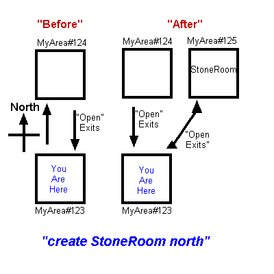
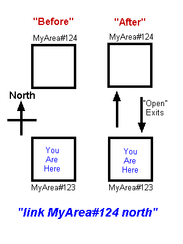
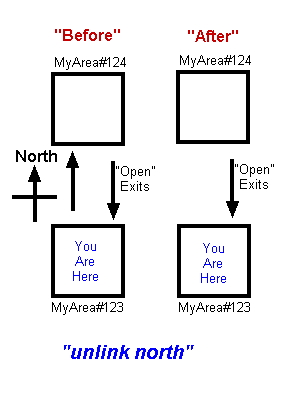
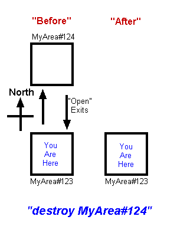
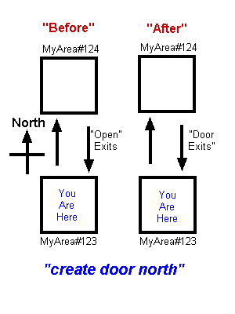
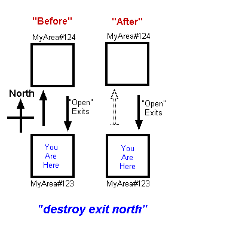

The Novice Archon's Guide
to CoffeeMud
5.9
By Archon Grothus Gallslanger of the Free City of Maltan
World Construction and Destruction
Causing buildings and towers to appear along paved streets, mountains to rise from the dust, and then breathing life into this worlds denizens may seem like a daunting task, but you will quickly discover that it is not so. All it takes is some careful planning, and educated execution.
Towards that end, but before we get started properly on the business of molding a universe, we must needs take a moment to reflect on the powers of the Archon, and how the universes underlying laws are navigated. Herein, therefore, I have copied from the sacred scrolls the archaic and confusing runes of "CoffeeMud Administration" for your consideration.
The administration of your CoffeeMud server is done from within the game server itself, when you are logged in as your Archon player. Some functions can be performed from the MUDGrinder.
AHELP
This is the command that
Archons will use to get help on
all of the commands in this section, on various administrative topics,
and on all of the various building "tools" discussed elsewhere in this
document, including such things as behaviors and properties. The
atopics command can give you a comprehensive list of all the topics you
can get help on with ahelp.
ANNOUNCE
If there is some message you
wish to give to everyone
presently on your mud, this is the surest way to make sure they receive
it.
AFTER
This command lets the Archon
do things after an elapsed time, or
even periodically.
AS
This command lets the Archon
do anything as another player.
AT
This command lets the Archon
do anything anywhere, regardless of
where he is!
BAN
Deadly, but necessary, this
command allows you to specify
player names, or partial player names, or IP addresses or IP ranges
that you wish to keep OUT of your mud.
BEACON
The beacon command is used to
change the unique home, start room,
or recall room of either the Archon, or some targeted player. Rarely
used, it is typically invoked only as reward for a player or perhaps a
lesser admin.
BOOT
If a player becomes
troublesome, or you just want them to
go away, you will use this power to knock them temporarily out of your
mud, regardless of where they are in your world. To make them STAY
away, you will have to investigate commands such as destroy or ban.
CATALOG
This is a powerful command for
managing templates for
your customized mobs and items. This is discussed in more depth below
in a section just before Appendix A.
CHARGEN
This little tool accepts a
character class name and a
level, and it shows you the stats of an "average" player of that class
and level. Although it's not a vital administration tool, CharGen can
be a helpful aid in the construction of monsters, perhaps.
CLOAK
This command makes the player
unlisted in commands like who,
chanwho, and on web player lists.
COPY
Depending on the argument,
this command can make copies of
almost anything in your mud, from rooms to monsters and items. The
thing you want to copy must exist somewhere in the world for you to
properly copy it. You can even specify how many things you wish to
copy, for those moments when one pot pie just won't do.
CREATE
Depending on the argument,
this command can bring almost
anything into existence, from rooms to doors, from monsters to items.
The create command is discussed at length in the sections on building
rooms and areas. It is also featured prominantly in theGame Builders Guide.
DESTROY
This powerful command can be
used to banish objects and
mobs, rooms and areas, or even players -- permanently. A player (user)
need not be online to be destroyed. The destroy command, as it relates
to rooms, exits, items, and mobs, is discussed further in the sections
on building rooms and areas, as well as the Game Builders Guide.
DEVIATIONS
Can show you the difference
between your world as it is compared
with the standards at the end of this document.
DRESS
The quick way to get clothing,
weapons and armor on your mobs
from the command line.
DUMPFILE
When you want to view some
text file on your computer through the
MUD.
EXPORT
If you need a backup to your
database, you can save your
areas one at a time as files, for reimportation in the event of a
disaster. This command will generate files with the extension .cmare.
They are XML formatted text files containing all the data you told the
system to export. In addition to rooms and areas, you can also
specifically export players, some items or mobs from a room. The import
command could then be used later to load the data you exported back in.
GMODIFY
Quickly search for all the
monsters, items, or rooms that
match your search criteria. You can also optionally modify the found
fields with this command.
GOTO
Allows the Archon to zap him
or herself directly to the
room or mob of his or her choice. The argument is a valid Room ID, room
name, mob name, or area name. You will find yourself using the goto
command quite a bit. Walking everywhere sucks.
I3
This module is used to manage
InterMud 3 chatting channels.
I3 is a component of CoffeeMud that provides for chatting channels
which span across many many muds in cyperspace, allowing players and
admins to talk to folks playing on other muds.
IMC2
This module is used to manage
InterMud Chat 2 information.
IMC2 is a component of CoffeeMud that provides for chatting channels
which span across many many muds in cyperspace, allowing players and
admins to talk to folks playing on other muds.
JRUN
This command can be used to
execute Javascript scripts
located on the local hard drive. If the gods have given you this power,
they have great trust in you indeed.
IMPORT
Import will suck in one or
more data files and recreate
rooms, areas, players, mobs, items, and lots of other stuff from the
contents of those files. The data files that import will successfully
read include (of course) the CoffeeMud .cmare files discussed under the
export command. In addition, import will also take in area data files
from other MUDs, such as ROM, CircleMUD, and others. Of the
non-CoffeeMud area files, the ROM format is by far the best supported.
LINK
This command will cause two
places to come together, making
travel between them much easier.
LIST
The Archon is able to list
lots of different things, for
many different reasons. "list users" will show you all of the players,
and when they logged on last. This is useful for weeding out olde
players (see DESTROY below). "list threads" will show you how many Java
threads are active. "list ticks" will show you all the objects making
use of those threads! "list reports" will show you your resource usage.
"list staff" will show you a list of your areas and any Area staff
defined for them, and "list sessions" will show you everyone who is
online or may soon be. You may also list things like locales, items,
weapons, armor, mobs, and other things discussed further down in the
sections on world building.
LOAD
This command will cause a text
or file resource to be brought
into memory. What happens to it from there is your business.
MERGE
This powerful tool is rarely
used, but is vital if you need
to make small changes to identical items or mobs scattered all around
your world. It uses item or mob data gathered from the export command
to merge with the items and mobs you specify in the real world, making
the necessary world corrections that you want it to.
MODIFY
If something which exists is
not quite right, this command
can make it right. By telling the system exactly what you want to
modify, you can change it into what it ought to be. The modify command
is discussed further in the sections on building rooms and areas, as
well as in the Game Builders Guide.
MULTIWATCH
A little tool which allows an
Archon to gather evidence against
multiplaying players.
NOPURGE
Prevent a player from ever
being auto-purged due to not logging
in.
ORDER
Although any player may order
around their followers, an Archon
can order ANYONE to do ANYTHING.
POOF
This command lets you modify
the messages seen when you use GOTO
to move from room to room.
POSSESS
Easily the most fun part of
being an Archon is to possess
one of the monsters and harass the players, making them think the
monsters have truly come to life! Some enjoy this so much that they
forget to return to their true bodies!
PURGE
A moderate form of the DESTROY
command which allows you to clear
out mobs or items without affecting whether or not they will repopulate
(rejuv) later on.
RESET
Giving a parameter of "room"
or "area", this command will make
everything reset back to the state it was last saved at.
RESTRING
A moderate form of the MODIFY
command which allows only editing a
few fields on items.
SAVE
This command is used to update
your CoffeeMud database. If
you use "save user", the system will update the players data. "save
room" can make aspects of a room permanent by saving it to the
database. Saving rooms is discussed further below in the section on
building.
SHELL
This command will allow you to
view the files in your
coffeemud folder, copy and delete files, and even put them in your
database. Saving files in the database? See the first section of the Game Builders Guide
for more info on
the CoffeeMud VFS system.
SNOOP
This command can let you watch
other players as they wander
your world. This command gives you a second pair of eyes to look over
the shoulder of the player of your choice. You will see everything they
see, almost as if you were them yourself.
STAT
This command allows you to do
everything from view the
statistical happenings on your world, to the simple charicteristics of
a target mob or player.
SYSMSGS
This important little trick is
vital to those doing
CoffeeMud development from the command line. It gives the Archon a
unique vision of the world sometimes necessary for his work. For one,
it makes everything visible to the Archon regardless of its state of
visibility, darkness, fog, or any/all other conditions. It also reveals
the unique identifying codes, classes, and names by which things are
known or identified. It also makes otherwise mobile mobs stay put in
the presence of the Archon. All of this is very important when trying
to
modify or destroy things you no longer want in your world.
SHUTDOWN
Although CoffeeMud can also be
brought down by killing the
Java virtual machine, the proper way to shut down CoffeeMud is by
entering the shutdown command. This will ensure that all users are
saved back to disk, and that the system goes down in a polite and
orderly manner.
TAKE
Use this command if a player
or monster has something that
doesn't belong to them, and you need it back.
TICKTOCK
This simple little power will
advance the world's time
clock by one hour every time it is used. If it's day, and you want it
to be night, or vis-versa, this is the way to go.
TRAILTO
A tool to tell the Archon the
twistings and turns from where he
is, to where he'd like to be.
TRANSFER
Allows the Archon to zap
someone directly to the room or
mob of his or her choice. The argument is either ALL or the name of the
target, and a valid Room ID, room name, mob name, or area name. Use
this when you want someone to go somewhere NOW.
UNLINK
This command will separate two
places from one together.
UNLOAD
If you've made any changes to
your help files or other
resources, and don't want to have to reboot the whole MUD, you can use
this command as a short-cut. It unloads "resources" (try "list
resources") that are in memory. By unloading resources from memory, you
force CoffeeMud to reload your changes from disk.
WHERE
Allows the Archon to see who
all is online, and where they
are on the map. With an argument, the WHERE command becomes a map
search tool. An argument such as "where orc", may be given to specify a
specific mob name. That way, you can find out where you might have
misplaced that wandering zombie. Where can also be used to locate
rooms, items, or almost anything else. The mind boggles at the
possibilities.
WIZEMOTE
The omnipresence of the Archon
is reflected in this command,
which causes a message to appear throughout the world.
WIZINV
Sometimes an Archon wants a
little privacy, and this
command gives it to him or her. It will make the Archon completely
undetectable, allowing free movement without harassment from players or
monsters.
CoffeeMud has an extremely flexible and powerful security system. It allows the Archons to designate who has which powers, and where they may exercise them. Powers can be doled out to minions as they deserve and warrant.
By default, all players who have levels in the class of Archon are all powerful system administrators, who may perform all of the powers discussed in the last section and many many more. Of course, this does not NEED to be the definition of the all powerful, but since it is for starters, we will continue as if Archon and 'All Powerful Super Duper System Administrator' are indeed and always the same. If you wish to change it, the SYSOPMASK setting in your coffeemud.ini file is the place to go, or to the MUDGrinder has a wonderful tool for security in the Control Panel.
While players are just players, and are unable to wipe their own noses without an Archon to provide them a tissue, they may also be much more with the wave of an Archon's hand. The Security setting one sees when using the command MODIFY USER playername from the command line can be used to give players a small portion of the creative powers. By combining this with the Staff setting under Areas (see below), players can have their powers narrowed to certain spheres of influence. A customized Character Class can also be used to expand the creative power of players by adding Security Group Levels to your players character class. See the section on creating your own custom character classes for more information on this.
To upgrade the powers of a player, you may use the MODIFY command as mentioned previously. From the Security setting, players who are not SYSOPS may be granted very specific privileges by adding special security codes. Each of the privileges/flags may be limited to specific areas, or available globally. Each entry listed under Security for a player may be either a security Group, or a specific security code. Security Groups, like the SYSOPMASK mentioned above, are also defined in the coffeemud.ini file or from the MUDGrinder Control Panel. A Security Group consists of a group name, and a set of string codes representing privileges for that group. The string codes are the security flags. The Group names in the Control Panel start with the string "GROUP_", but only the part after that string is a valid group name. You should never include the "GROUP_" part when entering a group name into a players Security settings.
Now, each individual security code which makes up each of the groups is implicitly global (meaning the power may be used anywhere), but can be qualified as area-only by prefixing the code with the word AREA and a space. For example, the security code "ANNOUNCE" by itself confers the global ability to use the ANNOUNCE command. The security code "AREA ANNOUNCE" means that the ANNOUNCE command can only be used inside areas where the player is listed as Staff. See the section on Areas in this guide for more information on Staff.
Use HELP SECURITY, or access the Control Panel from the MUDGrinder for a list of recognized security codes.
Building Your World: Planning is the First Step
Before a single bird can flitter through the skies that you opened up, you must have planned the placement of that sky, and the song of that bird. I am assuming you have been given some general area to construct, some wicked kingdom, joyous elven city by the sea, or some other such nonsense. If not, get one; decide on the general theme of some area you wish to construct.
At this point I suggest you get
a piece of graph paper or parchment.
Upon it you shall draw small squares next to each other. Plot out every
location you will create. The squares need not be equal in size, but
they need to all fit together somehow. Before invoking the spells of
creation, you should know where every door leads, where every path
ends, and if X indeed marks the spot, where the X is.
Inside each square, you shall make small notes. What notes? Well,
that's the next part of our story.
At the foundation of the CoffeeMud world is the room. Now, a room is not just some pink wallpapered play area, but simply a place. Certainly a kitchen can be a room, as can a pink wallpapered play area, but so can the bottom of a well, a stretch of rolling hills, the top of a tall mountain, or a dragon’s lair deep underground. Physical size does not matter with rooms; only your imagination can determine that.
Every room has a general foundational type that defines it. That type determines the behavior of that room day to day, whether it is outside or inside, made of wood or stone, a mountain or a plain, in darkness or light, a cliffside or deep in the ocean. The type determines whether one breathes water or air, chops wood or fishes, and how good the hunting is. This foundational type of every room has a name: Locale.
If you log into CoffeeMud right now, you can list the available Locales with the command "list locales". This list should include many different types of locales, most of which are self-explanatory. They include:
| CaveMaze | a dark, dank, multi-room maze of caves |
| CaveRoom | dark and dank |
| CaveSurface | dark and dank ClimbableSurface |
| CityStreet | outside urban area |
| ClimbableLedge | the edge you must climb up to |
| ClimbableSurface | an area that can only be climbed or flown through |
| Desert | a hot, dry, outside locale |
| DesertGrid | a hot, dry, multi-room outside locale |
| DesertMaze | a hot, dry, multi-room outside maze |
| DesertThinGrid | as DesertGrid but it uses less memory/more cpu |
| EndlessOcean | huge multi-room, locale on the ocean surface |
| EndlessSky | an endless, ~3D, multi-room, locale up in the sky |
| EndlessThinOcean | As EndlessOcean but using less memory/more cpu |
| EndlessThinSky | As EndlessSky but using less memory/more cpu |
| FrozenMountains | a cold, outside, mountanous room |
| FrozenPlains | the cold snowy plans |
| GreatLake | endless, ~3D, multi-room, locale below the lake surface |
| GreatThinLake | as GreatLake but using less memory/more cpu |
| Hills | green rolling hills |
| HillsGrid | a huge multi-room rolling hilly area |
| HillsThinGrid | as HillsGrid but using less memory/more cpu |
| HotRoom | a hot, stone, indoor place |
| IceRoom | a cold, icey, indoor place |
| IndoorInTheAir | such as a gap in a cave, or midway down a pit. |
| IndoorShallowWater | a layer of underground water perhaps |
| IndoorUnderWater | under an underground lake |
| IndoorUnderWaterColumnGrid | tall narrow under water indoor rooms |
| IndoorUnderWaterGrid | grid of under water indoor rooms |
| IndoorWaterSurface | on the surface of an underground lake |
| IndoorWaterThinSurface | on the surface of an underground lake that uses less memory |
| IndoorWaterSurfaceColumn | on the surface of an tall narrow underground lake |
| InTheAir | a place up among the clouds |
| Jungle | a thick hot overgrown forest |
| JungleGrid | a large multi-room overgrown hot forest |
| JungleThinGrid | as JungleGrid but using less memory/more cpu |
| LargeCaveRoom | a cave room large enough to bring mounts into |
| LargeStoneRoom | a stone indoor room large enough to bring mounts into |
| LargeWoodRoom | a wooden indoor room large enough to bring mounts into |
| LongRoad | the open road, cost more move |
| LongerRoad | the open road, cost more move |
| LongestRoad | the open road, cost most move |
| MagicFreeRoom | an indoor, stone place where magic always fails |
| MagicShelter | the basis for the mage "Shelter" spell -- do not use. |
| Mountains | an outside, mountanous region |
| MountainsGrid | an outside, mountanous multi-room of rock |
| MountainsThinGrid | as MountainsGrid but using less memory/more cpu |
| MountainsMaze | an outside, mountanous maze of rock |
| MountainSurface | a climable mountainous place |
| MountainSurfaceGrid | a large, multi-room, climable mountainous place |
| MountainSurfaceThinGrid | as MountainSurfaceGrid but using less mem/more cpu |
| OceanGrid | a large grid of salt water surfaces, which will bring along skys and underwater rooms |
| OceanThinGrid | as Ocean grid, but using less memory/more cpu |
| OverTheLedge | a room you can walk into, but then fall doooowwwnn |
| Plains | out in the open fields |
| PlainsGrid | a huge multi-room, outdoor plains area |
| PlainsThinGrid | as PlainsGrid but using less memory/more cpu |
| Road | out in the open road |
| RoadGrid | a huge multi-room, outdoor stretch of road |
| RoadThinGrid | as RoadGrid but using less memory, more cpu |
| SaltWaterSurface | the surface of the ocean |
| SaltWaterSurfaceColumn | the narrow surface of the ocean |
| SaltWaterThinSurface | as SaltWaterSurface but depths use less memory/more cpu |
| SeaPort | as a Shore, but Sailing Ships can be initially docked here. |
| SewerMaze | a wet, cave-like maze |
| SewerRoom | a wet, cave-like room |
| ShallowWater | a wet, outdoor area |
| Shore | some solid ground to fish from, if water is nearby |
| StdGrid | the basis for all of the Grid locales -- do not use. |
| StdMaze | the basis for the maze locales -- do not use |
| StdRoom | the basis for all other Locales, do not use! |
| StdThinGrid | the basis for all of the ThinGrid locales -- do not use. |
| StoneMaze | well lit indoor multi-room maze with stone walls and ceiling |
| StoneRoom | well lit indoor room with stone walls and ceiling |
| StoneGrid | well lit indoor multi-room locale with stone walls and ceiling |
| StoneThinGrid | as StoneGrid but using less memory/more cpu |
| Swamp | damp outdoor swampy region |
| SwampGrid | a large multi-room damp outdoor swampy region |
| SwampThinGrid | as SwampGrid but using less memory/more cpu |
| ThinRoom | for internal use only |
| TreeSurface | a wooden ClimbableSurface, such as the trunk of a tree |
| UnderSaltWater | beneath the ocean |
| UnderSaltWaterGrid | a multi-room 2D place beneath the ocean |
| UnderSaltWaterColumnGrid | a multi-room place beneath the ocean where every room is down |
| UnderSaltWaterMaze | a multi-room 2D maze beneath the ocean |
| UnderSaltWaterThinGrid | as UnderSaltWaterGrid but using less mem/more cpu |
| UnderWater | as wet as it gets... unless you are a fish you won't live long |
| UnderWaterGrid | a huge multi-room underwater locale |
| UnderWaterColumnGrid | a multi-room underwater locale straight up and down |
| UnderWaterThinGrid | as UnderWaterGrid but using less memory/more cpu |
| UnderWaterMaze | a huge multi-room maze of underwater locales -- be careful! |
| WaterSurface | the surface of a lake or river |
| WaterSurfaceColumn | the narrow surface of a lake or river |
| WaterThinSurface | as WaterSurface but depths use less mem/more cpu |
| WetCaveMaze | as CaveMaze, but extremely wet and nasty |
| WetCaveRoom | a wet and nasty CaveRoom |
| WoodenDeck | a resourceless outdoor room that inherets weather |
| WoodRoom | well lit indoor room with wooden walls and ceiling |
| WoodRoomGrid | well lit multi-indoor-room with wooden walls and ceiling |
| WoodRoomThinGrid | as WoodRoomGrid but uses less memory/more cpu |
| WoodRoomMaze | well lit multi-indoor-maze with wooden walls and ceiling |
| Woods | thick with trees and life, the bright forest |
| WoodsGrid | thick with trees and life, multi-room expanse |
| WoodsThinGrid | as WoodsGrid but using less memory/more cpu |
| WoodsMaze | thick with trees and life, a multi-room maze of woodlands |
The type of room you pick can have an important impact on the residents of your world. The type of room can determine whether there is a sky above the players, whether players in the room are affected by weather events, whether there is any light in the room by default, whether nightfall affects the lighting in the room, whether players drown or require swimming, what kinds of resources are available from the various player resource-gathering common skills, and whether certain spells, prayers, skills, or commands work properly (Dirt Kicking doesn't work in ShallowWater, for instance). Room types also determine the maximum range of weapons used there, and the number of movement points players must expend to cross it. For the purposes of weapon ranges, outdoor rooms are size 10, indoor size 1, and caves size 5. For the purposes of movement cost (which can be adjusted by encumbrance, condititions, and other factors: 1 point for street, roads, skies, and most indoor rooms; 2 for a cave, desert, plains, and water surface; 3 for hills, forest, jungle, under water movement, and swamps; 4 for a climbing surface; 5 for mountainous; 6 for mountain climbing surfaces; and 3-4 for LargeXRooms.
For each room you are drawing on your graph parchment, you should note in the Locale type of the room from the above list, or from the list you received when you entered "list locales" into CoffeeMud. Keep in mind that some rooms are multi-rooms. These Grids and Mazes represent 2-Dimensional grids of rooms of a single sort. The dimensions are entirely up to you, and can range from a thin 1x20 trail, to a wide 15x15 block. The mazes expand on this by creating weaving paths through the grids.
The detailed properties of rooms are discussed further in the section on creating rooms.
Now surely you did not expect everyone to conjure him or herself from place to place! Why, the pitiful halfling thieves would starve in their holes if this were so. No, each of the rooms you have drawn on your paper will be connected with things called Exits.
For any two rooms that one can travel between, there are always two exits. One exit leads from the first room to the second. Another exit leads from the second room to the first. Usually those exits are the same, but they need not be if you don't want them to be so.
All exits will take a person from one room to another, and may even take them back again if you choose. An exit can only be located in one of six directions: North, South, East, West, Up, and Down. The four compass directions are easy to fathom, but be careful with up and down, as they need not be unhindered flight, or a reckless fall. If, for instance, the destination room is a Locale like "InTheAir", then Up obviously represents the open sky. If it is another "StoneRoom", however, it probably represents a flight of stairs. The Down direction may represent falling off a cliff, but it may also represent a ladder down to the basement. Either way is fine.
Exits, like rooms, can be of many different types. If you are still in CoffeeMud, enter the command "list exits". The list you receive describes the many connectors that can be mixed and matched between rooms. Some include doors, and some include doors with locks. There are walkways with pits, doors with needle traps, and many others. By far the most common of these Exits is called "Open". It describes a completely free and clear path between the two rooms you are creating. Here is the official list:
| ClimbableExit | a passageway one must climb through |
| Door | an ordinary closed door |
| FlyingExit | a passageway one must fly through |
| GapExit | an exit one must jump across or fall and DIE! |
| Gate | an ordinary closed gate |
| GenCurtain | the maleable walk-through door |
| GenDoor | the maleable generic door |
| GenExit | the maleable generic exit |
| Grate | an ordinary closed grate in the street |
| HiddenClosedDoorway | the venerable secret door |
| HiddenWalkway | a way that can be walked through, but not seen without searching |
| Impassable | no one may go that way |
| LockedDoor | an ordinary locked door |
| LockedGate | an ordinary locked gate |
| NeedleDoor | a door trapped with a needle |
| Open | a normal walkable passageway |
| OpenDescriptable | an open walkway thats describable |
| OpenNameable | an open walkway thats nameable |
| PitOpen | a walkable passageway with a pit! |
| StdClosedDoorway | base class for closed doors |
| StdExit | base class for all exits, do not use! |
| StdLockedDoorway | base class for locked doors |
| StdOpenDoorway | base class for open walkways |
| TrappedDoor | a trapped and closed door |
| TrappedLockedDoor | a trapped and locked and closed door |
| UnseenWalkway | a walkway that can not be seen by any means |
As you finish your graph parchment drawing, be sure to note those places where there are doors, locked doors, pit traps, and open walkways. If a door is one way, or if a door leads to one place when one enters, but does not go back to there when one leaves, make a note of that too. The doors listed above are ever vigilant in decorum-- doors that are opened by players will re-close in time, and locks are resecured.
However, it may come to pass that there is a rickety straw door to some hut you wish to have, but it was not listed among your choices. Fear not, for there is "GenExit" and "GenDoor". "GenExit" stands for "Generic Exit", and represents the finest in Archon power. A completely customizable exit flowing from one room to another. And thusly are exits divided from each other: the GenExits and GenDoors are customizable, flexible, changable, and otherwise maleable. All the other exits, however, are "Standard", meaning they are not very customizable at all, but they do load very quickly, and take up very little memory compared to a GenExit. GenExits, as well as the other features of exits, are discussed further in the section on creating exits.
Understanding
That Which Creepeth Upon the Land
The denizens of your land are surely the greatest accomplishment you will claim. From the lowly cooks in your kitchens to the great beasts in the darkest dungeons, it is they who will be remembered by those who visit your realm.
Funny then that for things so important, they should have such a short, ugly sounding name: MOB. If you are in CoffeeMud, you can list them: "list mobs". It will show you every creature that can populate your cities, dwell in your dungeons, or hide in your pantries. They are too numerous to list here.
If a creature is not listed there that you require, there is always the GenMob, that nasty formless being that can be shaped by the Archon to appear and behave exactly as it should. GenShopkeepers, GenPostman, GenLibrarians, and GenBankers are available to provide valuable services for your community. GenDeitys give your Clerics employment. GenRideable mobs provide transport. For more devious spirits, however, the GenUndead is also available, to strike fear in the hearts of the purest cleric. These mobs just mentioned form the troupe of "Generic" mobs, meaning they are customizable and changeable from inside the mud. The other mobs listed are classified as species "Standard" mob, meaning they are not nearly as customizable, though they do load quickly, and take up much less memory than the "Generic" mobs do.
GenMobs, as well as the features of MOBs, are discussed further in the section on creating MOBs.
Our last planning topic is that of the items that will be found in your land. Some of them will be priceless once-in-a-lifetime creations. Others will be reoccurring trapped chests that always seem to have enough gold for those bold enough to continuously risk their guardians.
The items can be discovered using the "list items" command. Other items include weapons, which can be discovered through "list weapons", armor from "list armor", and other miscellaneous enchanted items through "list magic".
For those items you need by are not present, there is also the "GenItem", "GenBoat", "GenChair", "GenTable", "GenBed", "GenLimb", "GenCoins", "GenCorpse", "GenKey", "GenLantern", "GenLightSource", "GenCigar", "GenPipe", "GenMap", "GenResource", "GenLiquidResource", "GenFoodResource", "GenRideable", "GenWallpaper", "GenJournal", "GenBook", "GenPlayerBook", "GenContainer", "GenFood", "GenDrink", "GenWater", and "GenReadable". For the fighting spirit there is the "GenWeapon", "GenStaff", and "GenArmor". Among the formless magical items are "GenPill", "GenPowder", "GenPotion", "GenScroll", "GenWand", and "GenSuperPill". These items just mentioned form the gluttony of "Generic" items, meaning they are customizable and changeable from inside the mud. The other items listed are classified as "Standard" items, meaning they are not nearly as customizable, though they do load quickly, and take up much less memory than the "Generic" items do. These and the many properties of items are discussed below under the section on creating items.
Before beginning, you should log into CoffeeMud and take yourself to some place that is adjacent to the area you will be forming. You should also cast the spell of natural enlightenment using the following command: "sysmsgs". You should see an utterance that reads "Extended messages are now: ON".
Now your eyes will behold new wonders when you look around the rooms: You will see the Locale types of the room, the Room IDs that have been assigned uniquely to each room, the Area IDs of the area you are in. They should look like this:
Area :(MyArea)
Locale: (StoneRoom)
(MyArea#123) Joe Bob's Room
The first line lists the area name, the second line the locale type we talked about earlier, and the third line lists the Room ID, followed by the Room Name. Take note of them all, my friend, and learn to appreciate their beauty.
Now that you have your plan laid out, it is quite time to being execution. Gather your strength, and begin harnessing the power of the Archon, for you will need every ounce of it when the wood and rock chips start flying.
To create a new room most easily, you must first be standing in a room adjacent to it, one that will be connected to it through some exit. You will then utter the invocation of room creation, summoning the Locale in the direction that the new room should be. For instance, you wish to have a new room north of room "MyArea#123". If room "MyArea#123” is already created, and the new room is going to be of the "StoneRoom" Locale, you would bring yourself to room "MyArea#123" and utter the words: "create stoneroom north".

At this point, you should cover your ears, as the sound of a stone room falling to the north is often quite disturbing. Between the two rooms; the one you are standing in, and the one you have created, will be a default exit: the Open exit. Most times, that is ok, though changing it will be the subject of the next section.
However, once this is done, and the rooms are irrevocably linked, you can still throw a small twist on things. If you are still standing in room "MyArea#123" and wish to create a NEW StoneRoom in the SAME direction, it can be done. Uttering the words "create StoneRoom north" AGAIN and a new room is created. Now, what happened with "MyArea#124" you’re wondering? It is still there, and it still leads back to where you are standing -- a one way exit.

For now, once you have created a new room, it is time to design the landscape of it. To do this, you should enter the room through the default Open exit that was created for you. You will find the room plain and boring.
To give the room a new name and description, utter the invocation: "modify room" and follow the promptings. The display property is the short name that appears at the top of the room description, while the description field is the long text. Type whatever text you like into these fields, and feel the power as the place takes on a new form dictated by your creative magic. These two fields support the CoffeeMud color codes described in the Programmer's guide, as well as line breaks using either %0D or \n. Normally, that's all you need to know. However, these fields may also be customized to display different text depending on the weather, season, or the time of day. This last is done by starting the field with the string <VARIES>, and following it with text surrounded by the appropriate codes in the following format: <CODE>text</CODE>. In all of these cases, the codes must be in uppercase. Valid codes include: SUMMER, SPRING, WINTER, FALL, DAY, NIGHT, DUSK, DAWN, RAIN, SLEET, SNOW, CLEAR, HEATWAVE, THUNDERSTORM, BLIZZARD, WINDY, DROUGHT, DUSTSTORM, COLD, HAIL, CLOUDY, SWIMMING, FLYING, CRAWLING, SITTING, CLIMBING, FALLING, INVISIBLE, HIDDEN, VISITED. You can also use <ELSE> to catch exceptions to your last VARIES tag.
Rooms of the Grid and Maze sort present unique challenges to the molder of universes. In the first place, if you have SYSMSGS turned on, you will notice that the room ID displayed is a little different. In addition to the room ID of the parent room, there is an additional set of parenthesis showing where you are in the big grid room. It would look something like this:
Area :(Coffee Grounds)
Locale:(Plains)
(Coffee Grounds#19#(0,2)) The Demitasse Demesnes
In this case, we are in Coffee Grounds#19, child room at X=0, Y=2.
You will notice that you are unable to modify child rooms like this one. In the case of Grids and Mazes, you must be inside the Parent room to perform modifications. To get to the parent room, use the GOTO command. In the example above, we would enter "goto Coffee Grounds#19". This will allow us to properly modify the room, and add any creatures (mobs) to it later on.
Once you are in the parent room of a Grid or Maze, you may use "modify room" to modify the properties of the entire grid or maze. You can modify things like the dimensions in the X and Y, to make your grid anything from a long hallway to a giant hedge maze.
Modifying the display and description fields also has unique consequences inside a Maze or Grid. You may enter a random selection of text strings to display into each of these fields, so long as you remember to separate each individual text selection by the <P> string. For example:
Display: 'First Display
Title<P>Second Display
Title<P>Third Display Title'
Description: 'First Description<P>Second
Description<P>Third Description'
The above, when placed in a grid or maze locale, will cause CoffeeMud to select randomly among three different display title/description combinations. Since there is an equal number of display and descriptions given (3), the display and titles will always be matched up in the grid children rooms.
After you have made your modifications to the grid parent room display and description, use the "reset room" command to have them take effect.
The "reset room" command will force CoffeeMud not only to reset a grid or maze, but to reload the creatures and items last saved in the CoffeeMud database. This can be useful if you make a few critters or things you don't want to keep and havn't yet saved. A corresponding "reset area" command does the same for the whole area.
And speaking of areas, rooms also may have behaviors and effects added to them, including a few more. In this case, the behaviors and effects above will only be active for this particular room. Aside from those listed under Areas above, here are additional Behaviors you might enjoy:
"DelayedTransporter" causes all
those who enter to be whisked
elsewhere.
"Emoter" - yea -- this is mentioned under Areas, but it's just sooo
cool.
"FasterRecovery" - makes the players recover their stats faster in this
room.
"FieryRoom" - stuff catches on fire here! watch out!
"InstantDeath" - nuff said.
"Mime" causes the room to mimic players. Wierd.. yea, I know.
"MovingRoom" the fast train to somewhere.
"ProtectedCitizens" will allow resident mobs to scream for help and
receive it when attacked.
"RandomMonsters" will cause monsters from a saved file to appear here.
"RandomItems" will cause items from a saved file to appear here.
"ItemGenerator" will create treasure and items for your rooms.
"RandomTraps" will cause random traps to be set here.
"ResourceOverride" if you want fishing in the desert, or sand in your
swap, this is the way to go.
"Scriptable" makes the room react to events in a scripted way.
"ScriptableEverymob" same as scriptable, but applies itself to all the
mobs born here.
"Sounder" is still a good alternative to Emoter.
Lots of other properties and effects are also available for rooms. In
addition to all the ones listed above under Areas, here are a few more
you might want to add:
"Prop_AbilityImmunity" protects
the room from specified targeted
spells.
"Prop_ClosedDayNight" turns off the lights in a lit room at nighttime.
"Prop_ClosedSeason" turns off the lights in a lit room during a season.
"Prop_CommonTwister" jumbles up the usefulness of gathering common
skills.
"Prop_Crawlspace" forces players to crawl through here.
"Prop_EnlargeRoom" forces players to use more movement traveling
through here.
"Prop_EnterAdjuster" affect the occupants stats permanent when entering
the room.
"Prop_HereAdjuster" affecst the occupants stats when in the room.
"Prop_HereSpellCast" affect the occupants with spells when in the room.
"Prop_IceBox" Keeps food from spoiling.
"Prop_ItemTransporter" drop it, and its gone -- elsewhere.
"Prop_ItemReceiver" is the elsewhere.
"Prop_LotsForSale" puts this room up for sale, and ensures that you
never run out of new rooms to buy.
"Prop_ModExperience" makes kills more profitable in this room.
"Prop_MagicFreedom" makes the room an unhappy place for mages.
"Prop_NarrowLedge" makes this a room you can cross.. if you are very
very careful.
"Prop_NoChannel" makes the room safe from channel messages.
"Prop_NoCharm" makes the room safe from charming.
"Prop_NoOrdering" makes the room safe from player ordering.
"Prop_NoPurge" makes the room safe for dropped garbage.
"Prop_NoPKill" makes the room safe from player killing.
"Prop_NoRecall" makes the room safe from recalling.
"Prop_NoSummon" makes the room safe from summoning.
"Prop_NoTeleport" makes the room safe from teleporting in.
"Prop_NoTeleportOut" makes the room safe from teleporting out.
"Prop_NoTelling" makes the room safe from telling between players.
"Prop_Peacemaker" makes the room safe.
"Prop_ReqAlignments" lets you limit the alignment of all who enter.
"Prop_ReqCapacity" lets you limit the number of folks or items in the
rooms.
"Prop_ReqClasses" lets you limit the character class of those who enter.
"Prop_ReqNoMOB" to make your area a player-only place to be.
"Prop_RestrictSpells" lets you limit specific skills or spells from
being used here.
"Prop_ReqEntry" lets you limit entry to folks by many different
criteria.
"Prop_ReqHeight" keeps out tall people, or at least those unwilling to
crawl.
"Prop_ReqLevels" lets you limit entry by levels.
"Prop_ReqRaces" lets you limit entry by race.
"Prop_ReqTattoo" lets you limit entry to players with certain
builder-definable tags.
"Prop_ReqPKill" makes this a place that only the bloodthirsty may enter.
"Prop_RestrictSpells" shuts down a list of spells that you provide.
"Prop_RoomDark" makes the whole area a place in need of light.
"Prop_RoomLit" makes the whole area lit, even at night.
"Prop_RoomForSale" puts this one little room on the market.
"Prop_RoomsForSale" designates that this room, and all others like it
nearby, are for sale as a group.
"Prop_RoomUnmappable" makes the whole area unmappable by mundane means.
"Prop_RoomView" makes this room seem to be another...
"Prop_RoomWatch" allows folks in other rooms to watch what goes on here.
"Prop_Smell" gives the place a smell.
"Prop_SparringRoom" makes the consequences of death more palatable.
"Prop_SpellAdder" puts everyone who enters under its spell.
"Prop_TattooAdder" puts a little something on all who enter.
"Prop_Transporter" send those who enter to the room you designate.
"Prop_Trashcan" destroys stuff dropped on the ground.
"Prop_WeakBridge" makes cross this room very very dangerous.
"Spell_Light" to keep things lit.
"Spell_Silence" to quiet things down.
And lots and lots of traps to put in your rooms: "Thief_Caltrops",
"Thief_DeathTrap", "Thief_Listen", "Thief_MinorTrap", "Thief_Trap",
"Trap_AcidPit", "Trap_Avalanche", "Trap_BearTrap", "Trap_Boulders",
"Trap_CaveIn", "Trap_CrushingRoom", "Trap_Darkfall", "Trap_DeepPit",
"Trap_Enter", "Trap_EnterBlade", "Trap_EnterGas", "Trap_EnterNeedle",
"Trap_EnterSpell", "Trap_FloodRoom", "Trap_MonsterCage", "Trap_RatPit",
"Trap_RoomPit", "Trap_SnakePit", "Trap_Snare", "Trap_SpikePit",
"Trap_Tripline".
Ok! Back to work!
If you are ever wandering around, and wish to go directly to a room you have created, you may utter the magic matra "goto RoomID". For instance, entering "goto MyArea#123" would take you to the room we created above. This will especially come in handy when we begin to create and destroy the links between rooms, and there is no other way to get to a room.
Now that you have created a room, and wish to link one of the rooms in your area with one of another, you can use a command that utilizes the Room IDs mentioned above. If you would like to create a northerly link from room "MyArea#123" to a room whose room ID is "MyArea#124", then you need only stand in room "MyArea#123" (use the "goto" command if you must), and utter the invocation: "link MyArea#124 north". This will create an Open exit between the room you are standing in, and the room whose ID is born out.

You should note that this command could be used as it was in the last section to create one-way exits to existing rooms.
If you wish to detach two rooms from each other, you need only learn the "unlink" command. If you are standing in the room to the south of the one you wish to unlink, and the room you wish to detach from is to the north, utter the command: "unlink north". It will do the trick!

Keep in mind that just because there is no longer a route from the room you are in to the other via a northerly path, it does not mean that there is no path from the detached room back to here again. You may have to conjure yourself into the other place and enter a "unlink south" command to completely detach them forever.
Sometimes the pain born from a failed or evil place is too much to bear, and as an Archon, you can do something about it. This involves the destroy command. It does not merely unlink the room, but obliterates it altogether and forever. To do this, first make sure you are not standing in the room you wish to destroy. Such destructive magic would surely be your end as well. Then you must utilize the Room ID of the doomed place. If the room you wish to destroy has the Room ID of "MyArea#124", then enter: "destroy MyArea#124". It will obliterate that place from the planet forever.

The difference between Exits and Rooms is a very important one. Creating and destroying Rooms describes WHETHER two rooms are connected, and by which direction. Creating and destroying Exits describes HOW one gets from one room to the next. Two rooms must be connected together before exits between them can be modified.
For instance, suppose you linked "MyArea#123" and "MyArea#124" as described above. By default, you get an StdOpenDoorway, also known as an "Open" exit. These exits can be walked through freely. Now suppose you wish to have a Door between the two rooms. If the exits between the two rooms are both the same, and you are standing in the southernmost room of the two, then changing them both is simply a matter of issuing the command "create Door north".

Just as unlinking rooms disconnects them, destroying exits can SEEM to disconnect them. When you issue a simple destroy command, and refer specifically to the exit, then you will not be destroying the link between the two rooms, but merely the exit that travels between them. Archons can still travel through these missing links, but players will not be able to. Also, destroying an exit only deletes the exit in one direction, not both. For instance, if you are standing in the southerly room of two linked rooms that both have Exits between them, and you issue the command "destroy exit north", you will destroy the Open exit between the rooms. As an Archon, you can still travel north through the destroyed exit, but players will not be able to.

Now, that an exit has been deleted, it is possible to create a DIFFERENT kind of exit for the northerly direction from MyArea#123 to MyArea#124. Issuing a create command like "create Door north" will create a door that leads from MyArea#123 to MyArea#124, WITHOUT AFFECTING the Open path from MyArea#124 to MyArea#123. This is only possible when the exits between two rooms are different, or one is deleted, as is our case here.

Now, suppose you wanted to have the same Door going between two rooms. For sure this is a more common scenario than the example we just went through. To do this, you must first delete BOTH of the exits between two rooms as described above. That means entering MyArea#123 and entering "destroy exit north", and then entering MyArea#124 and entering "destroy exit south".

Now, with both exits deleted (and thus the same), you can create a single door between them as we did in the first part of this section using the "create Door south" command.

A town or village, country or demesnes can hardly come to be without the careful demarcation of their borders. What separates the town from the country, or one country from another? Like everything else, this is the decision of the Archon as he groups his rooms into Areas.
The best way to create your areas is to do so right from the start. The moment you create the first plot of land in your new area, or lay down the first building in your new town, you should designate it as such. Enter the new room in your new area and utter the mystic chant "modify room area New Area Name". Of course, where "New Area Name" can be anything you wish. Call it "Newarea Land" or "Goldfish Villiage" or "The Fruity Phantasm" or whatever strikes your fancy.
Now that you have designated your new room as belonging to a new area, it is important to remember to create all future rooms by doing so from rooms that already belong to the new area. Any future rooms that you build by standing in your new area room will bear its area mark, as well as any rooms created from any other room bearing the new area mark. If you fail then, you may be forced to invoke the power of the "modify room area..." command again to re-group the rooms you are creating.When you create a new area, you will be asked for the arcane "type of area" you want to create. We will now take a second to peruse the different area types:
| StdArea | This is a standard, every-day area in your every day world. All of CoffeeMuds features work just fine with it, as it has no restrictions or limitations. The standard area always has its own weather, and inherets its calendar. Use this type for your most often used areas, your areas with lots of special features, and your most important areas, especially when they are less than 700 rooms. |
| StdGridArea | The standard Grid area is identical to a standard area, except that there is a limitation on the number of rooms that can be in a grid area. That limitation is always based on the width and height dimensions you have defined for it. The maximum rooms is always width X height. You probably won't notice any differences between a standard area and a standard grid area unless you use the MUDGrinder visual area editor. This is because grid areas always position their rooms at a single coordinate location on the visual editor screen, and it never ever moves from that position. This can be a blessing for those creating carefully pre-planned areas that fit nicely in 2 dimensional graphs. It can also be a blessing for big areas (> 200 rooms), since the MUDGrinder will let you edit a grid area in sections, and the rooms won't move around on you when you re-link them. Use this area type if you do a lot of MUDGrinder visual work. It can be a curse for more organic area designers, however. |
| StdPlanet | A standard planet is mostly unimplemented at this time. It inherets the features of the StdArea and the StdTimeZone. |
| StdAutoGenInstance | An area that reads xml files allows it to generate random rooms with random mobs and content. When players enter the area, they are given a new instance of a generated area that is destroyed after they have left. See the GENERATE command for more information on random generated areas. |
| StdBoardableShip | An area that's for internal use only, as it expects to be tied to a portal item. It manages links between itself and the portal, and allows certain messages to flow between the item location and itself. |
| StdSpaceShip | The space ship is
definitely unimplemented at this time.
Don't bother with it. It lacks many of the features of the other area
types. |
| StdThinArea | A thin area is the same as a standard area with one difference. The rooms in a thin area are not loaded at mud boot time. Instead they are loaded only when a player, mob, or a special built feature (such as a random monsters behavior) causes one or more rooms to be loaded. Thin areas will also periodically unload their rooms when they havn't been accessed in 40 minutes or so. Thin areas are fantastic for enormous (>1000) room areas that span massive ranges. They won't gobble up your system resources. They are bad for popular areas though, and for areas with lots of special features. Things like the legal system and conquest system don't work well with them, since an officer may not know where to find the local judge when someone is arrested (if the judges chambers are one of the rooms not yet loaded). If you are short on memory, or your area is one you need to have, but doesn't have to do much, the thin area is for you. |
| StdThinInstance | A thin instance is the same as a StdThinArea above, but with its own differences. Whenever a player or group enters one of these areas, a new copy of the area is created for the player group to run around in. Players grouped together will always be in the same one, while the next group will have their own copy. The exception to this rule is administrators of the area, which will always be able to roam around in the main, base area. Players will never have their location saved in one of the area copies, and if an area copy should ever go uninhabited for an hour or so, the copy will be erased from memory. This area type is great when you want every player or group to experience a particular area in its pristine state, no matter how many of them want to go there at the same time. |
| StdTimeZone | A standard time zone is the same as a standard area, except that it can have its very own calendar. Any "child" areas of a time zone area will also inheret its calendar. |
| StdThinGridArea | A standard thin grid area is a mixture between the grid area and the thin area. It combines the benefits and limitations of both. Use them only when you need to have a largenormous area with not much going on, like a planet-girdling wilderness that surrounds your more standard areas, for instance. |
| SubThinInstance | Like a Standard Thin Instance, but with a name requirement. If the name of the SubThinInstance has an underscore followed by the name of an existing normal area, or a word followed by a space followed by the name of an existing area, then this instance will be a thin copy of the area whose name follows. For example, "New_Midgaard" or "New Midgaard" would create a thin version of Midgaard. |
Areas also contain important properties which may be modified. Enter the secret code "modify area" to go through a list of these modifiable properties.
The name and description of the area may be changed by following the promptings. You may also tinker with the climate of your area, which will affect the types of weather that will blow through it, and how mild or severe the winters and summers may be, or the atmosphere in the area, which will decide whether your players can breathe, or you can set them both to inherit their values from parent areas . You may also change the player level. This field is normally 0, and will cause the actual median level of the mobs in the area to be used for calculating area suggestions, whereas a non-0 number will use that one instead.
This editor is also where you may add Staff. A player whose name is listed as Staff has no additional powers unless their player Security settings grant them specific AREA privileges. In that case, the player would be able to use their area privileges in the area where they are listed as Staff. The section on Security above mentions all this stuff in more detail. Typically, a player is listed as Staff, and then given several area creation privileges in order to assist in area building and modifying. After all, sometimes creating a universe becomes a little bit too much work for one person.
Strange settings like Technology Level and Archive File Name are available on the area promptings. Don't worry about these. The former is not very important at the moment, and the second is a bit too obscure for these lessons. And then there are Blurb Flags, which are flags whose descriptions can be displayed when one displays the help for the area.
One of the special area types is the StdAutoGenInstance, which also has several special fields, such as Xml File Path to designate the file path (from your resources directory) to find the room definition xml file, and a set of miscellaneous variable settings. Almost all of these StdAutoGenInstance settings are extremely dependent on the particular xml definition file you use, so look over /resources/randareas/example.xml to read about how to make new ones. The format of the variable string is VAR=VALUE VAR2="VALUE" etc. Some variables that are important to the example randomdata file given above include area_ids for a comma-delimited list of what kinds of random rooms to generate, a comma delimited list of theme names that describe the theme of the random rooms, a level_range formula to determine the level range of your area, an aggrochance formula to determine the percentage chance the random mobs are aggressive, and an areasize formula to determine the number of rooms in the new area. You may insert the string @x1 through @x7 into your math formulas to substitute the current players level, lowest, median, average, highest, total levels, and group size respectively, allowing you to have the formula values scale with user level. You can also take advantage of the CoffeeMud scripting engine to insert Scriptable-style variables into your variable values.
You will also be asked to add any behaviors and effects to the area that you wish to. These may seem strange at first, and usually you won't add any of these at all. After all, rarely does a plot of dirt exibit any behavior, and what the heck is an effect? Well! To the first, the wind blowing through the trees, the hoot of an owl, or a distant cackling noise are all considerable behaviors. In fact, it is a behavior called "Emoter". Enter "ahelp emoter" for more information about the Emoter behavior. There are other behaviors that Areas may benefit from too. Here are some examples:
"Arrest" will add law and order
to your area, with resident mobs
playing the cops and the judges.
"Conquerable" has all the features of Arrest, plus it makes the area
conquerable by clans!
"Emoter" is what I mentioned above -- it's for inserting those cute
little blurbs in the area.
"FasterRoom" makes everything happen twice as fast here (or faster!)
"InstantDeath" makes everything that comes here DIE!!!!!
"LinkedWeather" makes the weather in this area mimic the weather from
another area.
"ProtectedCitizens" will allow resident mobs to scream for help and
receive it when attacked.
"PuddleMaker" will scatter some puddles around after rain or snow.
"RandomMonsters" will populate the area with lots of hideously random
creatures that you choose.
"RandomItems" will cause items from a saved file to appear here.
"ItemGenerator" will create treasure and items for your rooms.
"RandomTraps" will scatter some traps around your area.
"ResetWhole" will cause the whole area to re-boot every so often, thus
supplementing the natural "rejuv" process.
"Scriptable" allows you to script the behavior of the room in a limited
sense.
"ScriptableEverymob" allows you to script all the mobs in the area at
once.
"Sounder" is also for inserting little blurbs, plus it reacts to player
actions.
"WaterCurrents" will make those on the water bob and flow in the
direction you specify.
"WeatherAffects" will make the players really FEEL the weather.
As for effects, well, effects are special properties which you can attach to your new little holes in the ground. There are lots of nice properties that one may add to an Area, which will affect every room in it, such as:
"Merchant" to establish a store
front that follows the players from
room to room.
"Prop_AreaForSale" to make the entire area purchasable by a shopkeeper
in the area.
"Prop_CommonTwister" to mix up the resources gained from using
gathering skills in the area.
"Prop_Crawlspace" to make the entire area require crawling through.
"Prop_EnlargeRoom" makes crossing the area eat up more Movement.
"Prop_MagicFreedom" to fluster any spell-using folks that happen along.
"Prop_Hidden" will make the area unlisted to normal players.
"Prop_ModExperience" modifies experience gained in this area..
"Prop_NoChannel" for a place of quiet.
"Prop_NoCharm" lets everyone remember who their REAL friends are.
"Prop_NoOrdering" keeps players from being bossy.
"Prop_NoPKill" keeps out the riffraff.
"Prop_NoRecall" keeps folks from taking the easy way out.
"Prop_NoSummon" makes sure that everyone leaves of their own free will.
"Prop_NoTeleport" keeps those silly mages from teleporting in.
"Prop_NoTelling" prevents players from using the TELL command to each
other.
"Prop_NoTeleportOut" keeps those silly mages IN.
"Prop_PeaceMaker" to go with it if you want peace AND quiet.
"Prop_ReqAlignments" lets you limit the alignment of all who enter.
"Prop_ReqCapacity" lets you limit the number of folks or items in the
rooms.
"Prop_ReqClasses" lets you limit the character class of those who enter.
"Prop_ReqNoMOB" to make your area a player-only place to be.
"Prop_RestrictSpells" lets you limit specific skills or spells from
being used here.
"Prop_RoomDark" makes the whole area a place in need of light.
"Prop_RoomLit" makes the whole area lit, even at night.
"Prop_RoomUnmappable" makes the whole area unmappable by mundane means.
"Prop_ReqEntry" lets you limit entry to folks by many different
criteria.
"Prop_ReqHeight" keeps out tall people, or at least those unwilling to
crawl.
"Prop_ReqLevels" lets you limit entry by levels.
"Prop_ReqRaces" lets you limit entry by race.
"Prop_ReqTattoo" lets you limit entry to players with certain
builder-definable tags.
"Prop_ReqPKill" makes this a place that only the bloodthirsty may enter.
"Prop_Smell" gives off a unique aroma when players use their SNIFF
command.
"Prop_Weather" to have the same weather in an Area all the time.
To learn more about the properties you can add to areas and rooms,
enter "ahelp" while you are in CoffeeMud. Now, isn't this fun?
Remember, if you make a mistake, fear not, for the land does not grow
weary of your molding.
The final settings are the Area Default Economic settings for your area and include the following: Currency, Ignore Mask, Inventory Reset Rate, Prejudice Factor, Item Pricing Factor, Devaluation Rate, and Budget . See the next section called "What Areas Are Worth" for more information on these.
What Areas are Worth
Currency
Currency is the system of money used by the inhabitants of the area. It is defined using the Currency field when creating and modifying Areas as discussed in the previous section. All of the bankers, money changers, tax collectors, postmen, and shopkeepers will deal in the currency that you define for the area. By default, all areas will use a system of currency that includes gold coins, and golden notes, whole notes, and Archon notes. You can change this system by defining your own, however. The way you do this is by entering a name for your currency, followed by an equal sign, and then a series of relative values and currency names, all separated by semicolons. Let's look at an example:
US=1.0 penny(s);10.0 dime(s);25.0 quarter(s);100.0 dollar(s)
In the currency we have defined here, we have four different currencies: the penny, the dime, the quarter, and the dollar. Notice that each currency is separated by a semicolon in our definition string. Each entry includes two or possibly three parts. The first part is the base value, the second part is the name of the currency, and the optional third part is a "short name" used by shopkeepers when listing prices.
The first part of each currency entry tell us how much one unit of that currency is worth relative to the base coffeemud unit of value. This base unit of value is used throughout the system, and can be thought of as equal to one gold coin in the default currency. For this reason, it is wise for Archons to become familiar with the value of things in the default currency before defining their own. Under the system we gave in our example, a penny is worth 1.0 or the same as 1 of a base coffeemud unit of value. The dollar is worth 100.0 or exactly one hundred times the base unit value. The only rule when defining the worth of your currency units is that all currency values MUST be evenly divisible by the lowest valued unit. In this case, all of our values are evenly divisible by the penny, so we are safe.
The second part of each currency entry is the name of the currency unit. This can be any name you choose. The fact that the name of the currency ends with (s) tells us that the system should include the trailing letter 's' when there are more than one of that currency unit listed.
It is completely optional, but if you wish, you may also include a short name for each currency unit entry. If an entry contains a short name, it will tell the shopkeeper to try and display its currency using just those units. If none of the unit entrys contain short names, then shopkeepers will tend to display their prices in multiples of the lowest valued unit, in this case, pennys. Here is an example of that same currency redefined with short names.:
US=1.0 penny(s) (p);10.0 dime(s) (d);25.0 quarter(s) (q);100.0 dollar(s) ($)
In this new example, we have defined short forms for each currency, allowing shopkeepers to choose the most appropriate one. The prices will END with the letter p, d, s, or q depending upon which currency the shopkeeper chooses to display the currency in.
Once you have defined your currency in at least one area, you may use it throughout your mud by simply entering its name alone in the Currency field when you edit your area settings. In our example, US would be a sufficient value for the Currency field to tell the system to re-use our US currency in that area. You may also redefine the default coffeemud currency throughout the entire system by NOT entering a name for your currency. For example.:
=1.0 penny(s) (p);10.0 dime(s) (d);25.0 quarter(s) (q);100.0 dollar(s) ($)
This last example, since it contains a blank currency name, would make our U.S. currency system the default one used throughout coffeemud, or wherever the Currency value in the area settings is also empty.
Economic Ladder
Economics in CoffeeMud begins way down at the lowly ShopKeeper, in whom all economic factors come directly to play. From there it winds its up through the Areas and into the heavens where the document called coffeemud.ini resides. Said another way, all of the economic settings are available for changing on a shopkeeper by shopkeeper basis if it pleases the Archons. If you choose not to give specific economic settings to a particular shopkeeper, then CoffeeMud will check that ShopKeepers home Area for a setting. If that fails, it will eventually end up taking the global value for an economic setting from the coffeemud.ini file; settings which are identical to those found in the MUDGrinder's Control Panel. Since these economic settings are found in all three places (on shopkeepers, on areas, and in the coffeemud.ini file/MUDGrinder), it seemed suitable to discuss them in one place, so away we go:
Budget
A Budget is the maximum amount of local currency, per a defined time period, which shopkeepers will spend when buying equipment from players.
The format of a budget definition is an amount of money (in base values only) followed by the name of period (HOUR, DAY, WEEK, MONTH, YEAR). All of these time periods are **MUD** time periods, where one hour is about 10 minutes of real life time. For example, a budget of "200 DAY" means that the shopkeeper will not buy more than 200 gold per day of any equipment from players, assuming that gold=1.0 in currency value.
Ignore Mask
An Ignore Mask tells ShopKeepers what sort of Riff-Raff to not do business with at ALL. If left blank, the shopkeeper will happily serve anyone, or defer to his Area or global settings regarding who to ignore. If not blank, the mask describes who the shopkeepers will do business with, leaving everyone else to be ignored.
The syntax for this mask is the all-powerful Zapper Mask, which is described best under the help entry for ZAPPERMASKS. A ignore mask such as:
-RACE +Elf
... will have the shopkeeper ignore everyone but elves.
Devaluation Rate
Devaluation Rates limit the number of EACH PARTICULAR item that a shopkeeper will keep in his inventory. This provides a ceiling on the number of unique items of a kind which a shopkeeper will purchase from players.
The way this works is by defining how far the price drops, in percentage, every time the player sells an item to a shopkeeper. Decimals (real numbers) are allowed in this field. This field may also be used to differentiate between the rate of devaluation of raw resources and other finished items. A devaluation rate consisting of a single integer represent the devaluation percentage % of all items, while a devaluation definition consisting of two integers seperated by a space would represent the devaluation of finished items and raw resources respectively.
For example, a value of "20"
would mean that the shopkeepers value
price drops by 20% every time this shopkeeper buys a particular item.
If the shopkeeper buys two, it would be 40%. Three would be 60% and so
forth. This effectively limits the shopkeeper to buying to more than 5
of any item (5 * 20) == 100%. A value of "20 0.5" would mean a
devaluation rate of 20% for finished items, and 0.5% (1/2%) for raw
resources.
Item Pricing Factors
Item Pricing factors allow the
Archon to adjust the prices the
ShopKeeper sells from the programmed normal, based solely on the type
of item. It always works in tandem with all the other pricing and
rating factors described herein, of course, so this is hardly the only
fields that can affect item pricing.
If this list contains no item pricing factors, then the item pricing
factor will be 1.0, which means NO adjustment for any items. However,
you may enter one or more pricing factors for different types of items
which will cause the price of items to rise or fall depending upon
whether they meet the item criteria you specify. Here is an example of
one such pricing factor:
0.5
-MATERIAL +WOODEN
This would mean that the price is adjusted by 0.5 (meaning its cut in
half) for items that match the criteria described, which in this case
means wooden items. If the number had been 1.5, then the price would be
adjusted upwards by 50% instead.
You can have as many item pricing factors as you need to describe all the types of items you'd like this shopkeeper to modify the price of. See the online help for ZAPPERMASKS for more information on the syntax for the masking syntax used to describe the types of items affected by your pricing factors.
Prejudice Factors
The prejudice factor allows the
Archon to adjust the prices the
ShopKeeper sells from the programmed normal, based on the buyers Race,
Alignment, Sex, Class, or Faction. It always works in tandem with the
Devalue Rate below, as well as such factors as the Charisma of the
player dealing with your shopkeeper. The prejudice factor also serves
as a catch-all for a few other shopkeeper settings.
An unspecified value will always return a value of 1.0 (which means NO
adjustment). However, you may specify one or more adjustments separated
by semicolons (;). Here is an example:
SELL=5.5 Elf Dwarf ; BUY=0.4 Elf Dwarf ; SELL=1.0 ; BUY=1.0
Each adjustment must begin with the words "SELL=" or "BUY=" followed by a Real number designating the adjustment from normal. "SELL=" refers to the adjustment to prices players get when selling TO the shopkeeper. "BUY=" refers to the adjustment to prices players get when buying FROM the shopkeeper. A value above 1.0 for either of those will raise the applicable prices. A value below 1.0 (like 0.3 or 0.75) will lower prices. Values of 0.0 are NOT allowed. If you need to all but not allow buying and selling, a value of 0.000000001 should do.
Each adjustment may also contain the name of one or more Racial Categories (Elf, Dwarf, Gnome, Halfing, etc..). If a Racial Category is specified, then the adjustment will ONLY apply to that race. The adjustments are read from left to right, so adjustments without any racial categories should be listed LAST. In the above example, Dwarves and Elves are given a very good deal, where everyone else gets a normal one. In addition to Racial Categories, you may also list alignments (good, neutral, or evil), a sex (male, female, and neuter), a character class, or the name of a faction range. Remember that this field is evaluated from left to right, so any matches made on the left that apply to a player will cancel evaluation of the rest of the field!
Just as bonus feature, if the adjustment begins with the words "LIMIT=", then you may enter a number representing the maximum number of rows of inventory the shopkeeper will display whenever a LIST is done. If the adjustment begins with the words "RANGE=", then you may enter either a number or a percentage. This number will represent the maximum and minimum level range of the items which the shopkeeper will purchase from players. This level range is relative to the median level range of his area. For instance, if the median level of the shopkeepers area is 10, and RANGE=3 is entered, then the shopkeeper will only purchase items between levels 7 and 13. A value of 0 means no limit and no range, of course. These features have no relation with the above prejudice functionality -- they're just bonus.
Inventory Reset Rate
This is the rate, in ticks (4 second periods) at which the shopkeeper totally resets his inventory back to the last saved "stock" items. Leave this field empty to use the Area or coffeemud.ini defaults, or not to have a reset rate at all, depending. If this value is changed on an Area or in the MUDGrinder, the Archon may have to enter the RESET AREA command to cause all the shopkeepers to notice the change.
To modify an exit that is east of your present location, simply enter "modify east". If the exit to the east of you is a GenExit or a GenDoor, you will receive the properties mentioned above. If the exit is anything other, than you will be prompted to enter the Miscellaneous Text field. For a standard exit, like Open or Door, this field represents the secret code that must also be specified in the StdKey item in order for you to unlock this door without spells or thief picking. For a readable exit, this field represents the text that is written on the door.
As mentioned briefly earlier, the GenExit is an undefined exit that one can mold to fit ones needs. Whenever a GenExit is created or modified, you will be presented with a series of properties to change. Hitting return will leave most of these properties without modification. Entering new values will replace the old values. These properties include:
| Property | Description |
| Name | the general name of this exit. Such as "the grand portal", or "the wooden gate". |
| Description | what one sees when this exit is LOOKed at with the LOOK command |
| Display Text | what one sees when the EXITS command is issued and the way is OPEN. |
| Level | The Level of the door can determine how difficult it is to PICK or KNOCK. |
| Has A Door | I think thou canst figure these next few out. |
| Door Defaults Closed | |
| Has A Lock | |
| Door Defaults Locked | |
| Reset Delay # | Whenever this exit is opened after previously being closed, this is the number of ticks (where a tick is currently 4 seconds) that will transpire before the exit is reset to its default state. |
| Closed Text | what one sees when the EXITS command is issued and the way is CLOSED. |
| Assigned Key Item | This is the secret code that must be present in the StdKey for you to be able to unlock it. The StdKey must have it's Miscellaneous Text property set the same as this value in order to open this exit using the UNLOCK command. If the level is sufficiently low, the door can still be KNOCKed or PICKed without the key. |
| Door Name | Is it a gate, door, grate, or portcullis. Specify that here. |
| Close Word | When you close it, are you really lowering it, or sliding it? Specify the correct verb here. |
| Open Word | When you open it, are you really raising it, or sliding it? Specify the correct verb here. |
| Is.. flags |
I think thou doest grok most of these flags. You may also require a little climbing or flying for this exit, in case it is a mere gulf the player must traverse, instead of the wide expanse that a climable room entails. |
| Behaviors | Like mentioned above when we talked about Rooms, there are not many behaviors that one can give to an item, but "Emoter" and "Sounder" works with exits very well. |
| Effects | As mentioned in the section on Rooms, there are many properties that one may attach to items. Use "list properties" to see them all, and "ahelp propertyname" for more information. |
As for Effects, well, effects are special properties which you can attach to your new little holes in the ground. There are lots of nice properties that one may add to an Area, which will affect every room in it, such as:
"Prop_AbilityImmunity" protects
the exit from specified targeted
spells.
"Prop_ClosedDayNight" shuts and locks any doors at night.
"Prop_ClosedSeason" shuts and locks any doors for a season.
"Prop_Crawlspace" requires crawling through this exit.
"Prop_EnterAdjuster" modifies the players stats permanently when they
cross through this exit.
"Prop_Hidden" makes the exit hidden.
"Prop_Invisibility" makes the exit invisible.
"Prop_NarrowLedge" makes this an exit you can cross.. if you are very
very careful.
"Prop_NoPKill" keeps out the riffraff.
"Prop_OpenPassword" requires a spoken password to open the door.
"Prop_ReqNoMOB" to make your exit a player-only place to be.
"Prop_ReqAlignments" lets you limit the alignment of all who enter.
"Prop_ReqCapacity" lets you limit the number of folks or items here.
"Prop_ReqClasses" lets you limit the character class of those who enter.
"Prop_ReqEntry" keeps out people that fit your specific requirements.
"Prop_ReqHeight" keeps out tall people, or at least those unwilling to
crawl.
"Prop_ReqLevels" lets you limit entry by levels.
"Prop_ReqPKill" lets you limit entry by bloodthirstiness.
"Prop_ReqRaces" lets you limit entry by race.
"Prop_ReqTattoo" checks out a mobs forearm before letting them in.
"Prop_RoomView" makes looking at this exit more revealing.
"Prop_Smell" gives the exit an aroma when using the SNIFF command.
"Prop_TattooAdder" puts a little something on all who enter.
"Prop_Transporter" send those who enter to the room you designate.
"Prop_WeakBridge" makes cross this room very very dangerous.
Popular traps for exits include: Trap_AcidSpray", "Trap_ElectricShock",
"Trap_Enter", "Trap_EnterGas", "Trap_EnterNeedle", "Trap_EnterPit",
"Trap_EnterSpell", "Trap_Launcher", "Trap_Needle", "Trap_Noise",
"Trap_Open", "Trap_OpenBlade", "Trap_OpenGas", "Trap_OpenNeedle",
"Trap_OpenSpell", "Trap_PoisonGas", "Trap_SleepGas", "Trap_SpellBlast",
"Trap_SporeTrap", "Trap_Unlock", "Trap_UnlockBlade", "Trap_UnlockGas",
"Trap_UnlockNeedle", "Trap_UnlockSpell", "Trap_WeaponSwing"
To learn more about the properties you can add to exits, enter "ahelp"
while you are in CoffeeMud.
For our purposes, an item is any normal item, piece of armor, a weapon, a container, or any magical item, armor, or weapon. To bring one of these things into the world, you have only to call its true name using the create command. To create a Longsword, for instance, issue the command "create Longsword". It will then fall from the sky onto the floor or ground before you.
To find out what items are available for you to create, you can enter "list items". Entering "create <itemname>" will prove the true incantation for almost all of the items on this list. An exception, however, is the GenRideable. Since there is both an Item and a MOB version of that name, you will need to further qualify your create command by entering "create item GenRideable" or "create mob GenRideable".
The "GenItem", "GenResource", "GenMirror", and "GenReadable"
These represent some of the basic items your ordinary denizen will use every day. A GenItem and GenMirror represent nothing-special THINGS. GenResource is a raw material, like iron, coal, or wood, from which other things are made, especially with the common skills. GenReadables are GenItems with something to read on them, like a book or parchment.
Whenever a GenItem is created, much like the GenExit above, you are presented with a list of properties to fill in. Pressing enter will leave the property unchanged. The properties include:
| Property | Description |
| Name | the name of the item, like "a stone", or "a pencil" |
| Description | what one sees when one looks at the item. |
| Display Text | what one sees when an item is laying in a room. if you enter 'null' here, the item becomes blended, meaning that it does not show up in the listing of room contents, but may still be "looked" at, "read", or (if allowed) picked up! |
| Secret Identity | what one sees when the Identify spell is cast on the item. |
| Level | the level of the item, dictating the lowest level a character must attain to possess or hold it. |
| Uses Remaining | This property applies especially to GenWand, GenStaff, and GenScroll, discussed below. This tells how many times the magic in the item may be reused before requiring a recharge. |
| Rejuv/Pct |
This field has two
different meanings, depending upon whether
the item is in the room, or in a mobs inventory. |
| Is This Item Gettable | whether the item can be picked up off the ground. |
| Is This Item Droppable | whether the item can be dropped into a room. |
| Is This Item Removable | whether the item, once held or worn, can be removed. |
| Is This Item Non Locatable | whether the item can be found with magic such as the Locate Object spell. |
| Blend Display | whether item appears in the room description instead of the item list, such as when the player is viewing compressed room data. |
| Is This Item Readable | whether there are any readable markings on the item. Normally, an item must be in a players inventory to be read. However, if the item is set as not being Gettable, then it may be read even on the ground, like a sign or billboard. |
| Assigned Readable Text | if this item is marked, what those markings say. If this text begins with FILE=, then a text file from the resources directory will be displayed. For example: FILE=text/intro.txt |
| Material | this is the material that the item is made of. This affects the classes with armor restrictions, and the effects of certain spells. Choices include: cloth, metal, wood, leather, glass, and mithril. |
| Value | the items monetary value, for the purposes of buying from and selling to shopkeepers who price the item at default values. The value is expressed in multiples of the base value. A value of 20 will mean that the item is worth 20 gold (or whatever the local currency is), assuming gold is valued at 1.0 of base. If the local currency has only Latinum Bars valued at 0.5, then a money value of 20 here would mean that the item is worth 40 Latinum Bars. |
| Weight | the items weight. |
| Is Flags... (Disposition) | most these flags, my faith tells me, thou canst discern. To clarify, however, a glowing item gives off light. An invisible item can not be seen, except by magic. An unseen item cannot be seen at all. |
| Behaviors | Like mentioned above when we talked about Areas, there are not many behaviors that one can give to an item, but "Emoter" works with items very well. |
| Effects | As mentioned in the section on Areas, there are many properties that one may attach to items. Use "list properties" to see them all. |
| Uses Remaining | A few items, notably wands, scrolls, and ammutiion can only be used a few times. For all other items, this may be left unchanged. |
| Magical Ability | although meaningless for most Generic Items, and absent on others, this property does have meaning for specific items described below. In general, items which a magical ability above 0 are considered magical. The exception to this is the GenCoins object. For coins, this denotes the number of coins in the pile! |
The
"GenCoins"
A GenCoins item represents one or more instances of a unit of currency,
such as a dollar bill, a gold coin, a stack of bills, or a pile of
coins.
Whenever these GenCoins are created, much like the GenItem above, you are presented with a list of properties to fill in. Pressing enter will leave the property unchanged. The properties include all of the fields listed above under GenItem, plus two more:
| Property | Description |
| Money Data | A three part field,
including the Currency type,
which can be either "DEFAULT", another of the stock currency types, or
a custom currency defined for your area. See the section on area
currencies for more information on this. The next part is the decimal
absolute-value denomination within the given currency, followed by the
number of items in the "stack" of money. Together, these three fields
define the nature, value, and size of the GenCoins stack. You will be prompted for each of the three parts, beginning with currency. |
| Base Value | For a GenCoins item, this field is, ironically, useless. |
The
"GenLightSource", "GenCigar", "GenPipe", and "GenLantern"
A GenLightSource and GenLantern provide light for players whenever they are HELD. GenCigars and GenPipes are WORN on the mouth for enjoyment. GenLightSources and GenCigars will burn away after a time, while GenLanterns can be refilled with oil from an oil flask, and GenPipes must be filled with an herb.
Whenever these GenLightSources are created, much like the GenItem above, you are presented with a list of properties to fill in. Pressing enter will leave the property unchanged. The properties include all of the fields listed above under GenItem, plus two more:
| Property | Description |
| Light Duration | the number of ticks (4 second intervals) which will transpire before the light source will burn out. See the next field for more information on burning out. |
| Is Destroyed after burnout | Whether the item is destroyed after burnout. This defaults to true for GenCigar and GenLightSource (torches), which vanish after use. GenLanterns and GenPipes default this to false, meaning the item remains after it burns out (though no longer gives off light). The GenLantern may be refilled with oil at this time, or the GenPipe may be refilled with herbs to continue. |
The
"GenJournal", "GenBook", and "GenPlayerBook"
GenJournals and GenBooks are similar ways of persistent message
storage. GenJournals represent message boards for players to commonly
post on and everyone to read. All GenJournals who have the same NAME
field will display the same set of messages to readers, regardless of
how many instances of the same journal/book there are. GenBooks display
a table of contents listing the "chapters" available for reading.
Players who have access to GenJournals or GenBooks, and who have the
Write skill may write new messages/chapters (or post replies to old
ones on GenJournals). GenPlayerBooks are similar to GenBooks except the
"chapters" are tied to the author, and persist as long as they do.
GenJournals may be used by individual players to carry around and magically chat with each other on (assuming all their journals have the same name). They may also be large public posting boards. To make one of this last sort, simply make the journal non-gettable. That way, people can write on them even if they can't pick them up.
One special kind of journal is called "SYSTEM_NEWS". It is usually accessed through the LIST NEWS and MODIFY NEWS commands, but under the covers, it is just another journal.
Archons can also create special "persistent" entries. These entries remain "new" longer than normal ones. These are created by starting off an entry subject with the letters MOTD (for message of the day), MOTM, or MOTY. If a subject starts with those letters, in uppercase, the entry will persist as new for a day, month, or year respectively.
Archons can also make use of the Web Macros system inside the body or message part of an entry. To do so, the message must start with the characters <cmvp>. If those six characters start the message, then the message may contain web macros. See the WebServer Guide for more information on this feature.
Whenever a GenJournal, GenBook, or GenPlayerBook is created, much like the GenItem above, you are presented with a list of properties to fill in. Pressing enter will leave the property unchanged. The properties include all of the fields listed above under GenItem, plus one that works a little bit differently than described above:
| Property | Description |
| Assigned Readable Text | A Journal/Book is always
readable, so this field is
really redundant. Therefore, it is now used as a field where you may
set requirements for reading from and writing to the journa/book. If no
requirements are mentioned, anyone may read from, write to, or reply
it. A reading requirement is specified by putting READ= followed by some requirements. A reply requirement is specified by putting REPLY= followed by some requirements. A writing requirement is specified by putting WRITE= followed by some requirements. A named TO: filter can be given by putting FILTER= followed by a comma-delimited list of names (or ALL). putting WRITE= followed by some requirements. An optional administrative requirement is specified by putting ADMIN= followed by some requirements. The requirements for each of these settings can be seen by checking out the help entry for ZAPPERMASKS. The same mask criteria used for that property are also used for these options. You may also specify PRIVATE=TRUE here to designate the journal as a private diary, where messages can only be read by the person who wrote them, and you may specify MAILBOX=TRUE to turn the journal into a miniature mailbox, by prohibiting messages to ALL. Lastly, you can set SORTBY=CREATE to sort the messages by their creation date instead of their update time. The Journal supports all of these options, while the Book only supports READ, REPLY, and WRITE. |
The "GenWeapon", "GenBow", "GenLasso", "GenNet", "GenSling", "GenSpear", "GenBoffWeapon"
These are the assorted weapons players and mobs use to attack each other. They are typically worn in the WIELD position, though some may also go in the HOLD position, either as a requirement (for two handed weapons) or as an option (for those with two-weapon fighting).
Weapons can be anything from swords to daggers, from bows you shoot ammunition at, to spears that you throw. It all depends on how you design them. The GenBow, GenSling, and GenSpear classes don't actually offer any functionality you couldn't get out of a properly molded GenWeapon, but are provided as good examples of how to make them. The GenBoffWeapon, on the other hand, is another form of GenWeapon, but it provides some silly and random hit messages during combat.
The GenNet and GenLasso, however, are quite different. Each of those are capable of ensnaring someone who is hit by them when they are thrown. They do default to thrown weapons.
Whenever any of these GenWeapons are created, much like the GenItem above, you are presented with a list of properties to fill in. Pressing enter will leave the property unchanged. The properties include all of the fields listed above under GenItem, plus a few more:
| Property | Description |
| Attack Adjustment | a number representing the quality of the weapon. The most common value is zero, representing a normal quality item. Typical ranges include -10 for a poor quality weapon up to 10 for an exceptional quality weapon. |
| Damage | the highest amount of damage this weapon does when used in a fight. Typical range is 2 - 8 for low level weapons, up to 20 or 30 for high-level weapons. |
| Weapon Attack Type | this dictates how the weapon is used in combat, whether in a bashing manner, slicing, piercing, or as a natural (fingers and claws) item. |
| Weapon Classification | this tells how the weapon fits into the several weapon specialization categories, and also determines which classes can use the weapon without penalty. Choices include blunt, dagger, edged, flailed, hammer, karate (fingers and claws), polearm, ranged, and sword. |
| Two-Handed | Whether the weapon occupies both the wielded and held position when used. |
| Magical Ability | This number represents an adjustment to both attack adjustment and damage, denoting whether the weapon is magical. Typical ranges include -2 for a badly cursed item, up to 5 for an extremely high level magical item. |
| Condition | a number from 0 to 100 denoting the condition of the weapon. A 100 means that the weapon is in top condition. A 0 means that it is all but destroyed and worthless as a weapon. |
| Minimum range | this is the closest position required to use the weapon. 0 means the weapon may be used in melee, where 1 means that a minimum range of 1 pace is required. |
| Maximum range | this is the farthese position required to use this weapon. When combat begins, it will denote how far away the wielder is from their foe. The same values as above apply, though the maximum range must always equal or exceed the minimum range. |
| Requires Ammunition | whether this weapon requires ammunition in order to use. |
| Ammunition Type | This is the type of ammunition required by this weapon. Ammunition is a special kind of item called GenAmmunition (see below) which must have an ammunition type field matching that of its intended weapon (such as "arrows" or "bolts" or "rocks") and has a Uses Remaining property above 0. |
| Ammunition Capacity | This is the amount of the ammunition which can be held by the weapon at one time. Usually this is only 1. |
The "GenContainer", "GenCorpse", "GenCage"
The GenContainer represents the standard container of other things, whether it be a piggy bank, a chest, or a holster. Lids, capacity, and even restrictions on what can be placed in it are all settable from here. Containers are also smart enough to re-close themselves after awhile when they are opened, and re-lock themselves after awhile when they are unlocked (assuming they have lids and locks, of course). A GenCorpse is a special sort of container, and should not be created in your world without good reason. It is designed to stand as the corpse of fallen creatures and foes. The GenCage is a GenContainer that one can see the contents of even when the lid is closed.. this simulates bars or other see-through doors and lids.
Whenever a GenContainer is created, much like the GenArmor above, you are presented with a list of properties to fill in. Pressing enter will leave the property unchanged. The properties include everything listed under GenItem, plus a few more:
| Property | Description |
| Has A Lid | Well, does it have one?. |
| Has A Lock | If it has a lid, can you lock it? |
| Defaults Closed | If it has a lid, does it defaults closed? |
| Open Ticks | If the container has a lid that defaults closed and is NOT gettable, this is the number of ticks (4 second periods) after being opened, that item will automatically be re-closed. |
| Defaults Locked | If it has a lock, does it default locked? |
| Can Contain | This can help you limit what goes inside. The choices are: ANYTHING, LIQUID, COINS, SWORDS, DAGGERS, OTHER WEAPONS, ONE-HANDED WEAPONS, BODIES, READABLES, SCROLLS, CAGED ANIMALS, KEYS, DRINKABLES, CLOTHES, SMOKEABLES, SS COMPONENTS, FOOTWEAR, RAWMATERIALS |
| Capacity | this denotes the maximum amount of weight that can be placed in the container. |
| Contents Accessible | normally one must remove an item from a container to look at it, or manipulate things inside a contained container. This flag makes the contents accessible as if uncontained. |
One more thing to keep in mind. Always make the weight of a container less than its capacity. A container must be able to hold its own weight in addition to anything put in it!
The GenAmmunition is a very special kind of item that can not be worn or held. It represents a package of ammunition for a GenWeapon (or GenBow, etc..) which requires ammunition. To make the ammunition work with your weapon, the values in the ammunitionType fields in both the GenWeapon and the GenAmmunition must match. Whenever a player runs out of ammunition for their weapon, it will be drawn from GenAmmunition objects, provided they are in the players inventory.
GenAmmunition differs from other items not only in its inability to be held, but also in its ability to transfer any Effects on itself to the weapon. Whenever a weapon draws ammunition from a GenAmmunition type, properties, spells, and other Effects on the Ammunition will be transferred to the weapon. This allows one to make Magical ammunition.
Whenever a GenAmmunition is created, much like the GenItem above, you are presented with a list of properties to fill in. Pressing enter will leave the property unchanged. The properties include everything listed under GenItem, plus a few more:
| Property | Description |
| Ammunition Type | arrows, bolts, bullets, etc. MUST match the ammunition type field of the weapon. Also, the Uses Remaining field for ammunition represents the AMOUNT of ammunition in this bundle. |
The "GenArmor" and "GenShield"
These represent all manner of clothing, shoes, worn jewelry, armor, and of course shields. Of these, only a shield MUST be made from GenShield. Everything else may be made from GenArmor. Plus, GenArmors are also containers, meaning that you can make armor that things can be sheathed in or placed in like pockets.
Whenever a GenArmor piece is created, much like the GenContainer above, you are presented with a list of properties to fill in. Pressing enter will leave the property unchanged. The properties include everything listed under GenItem and GenContainer, plus a few more:
| Property | Description |
| Worn Locations | this little menu allows you to describe either all the different places a piece of armor MAY be worn, or to describe ALL the places that a piece of armor MUST be worn. Entering the specified numbers will toggle the locations. Entering '1' will toggle whether it is a MAY or MUST situation. Enter '0' when done. |
| Layer |
a
number designating what can be worn on
top of or beneath this piece of armor. Generally higher numbers are
worn on top of lower numbers, with negative numbers generally meaning
underwear. However, a layer number must be 2 higher than the next
lowest worn item on the same location to cover it. For instance a layer
3 can cover a layer 1 or 0, but not a layer 2 or 4. This entry also
allows you to designate whether this item hides anything worn beneath
it or is see-through, and whether multiple of these can be worn on the
same location at the same time (such as jewelry). |
| Armor Protection | the base amount of protection provided when wearing this piece of armor. Unline MOBS, the higher the number here, the better for the wearer. |
| Magical Ability | This number represents an adjustment to the armor protection, denoting whether the armor is magical. Typical ranges include -2 for a badly cursed item, up to 5 for an extremely high level magical item. |
| Capacity | if the armor piece has pockets, this denotes the maximum amount of weight that can be placed in it. 0 is a typical value, denoting that you cannot store items in this armor. The capacity should always exceed the weight. |
| Can Contain | For armor with capacity, this can help you limit what goes inside. This value must be changed to something specific, and a sufficient capacity must be set, in order for this item to be a SHEATH. |
| Condition | a number from 0 to 100 denoting the condition of the armor. A 100 means that the armor is in top condition. A 0 means that it is all but destroyed and is not longer providing any protection at all. |
| Size | the size of the piece of armor. 0 means that the piece has a variable size, and will fit anyone until it is worn for the first time. Any other number means that the wearer must be near to the size in inches to wear it. |
The "GenThinArmor" and "GenEarring"
GenThinArmor represents wearable items, and are identical in form and function to GenArmor above except for several important differences:
1. GenThinArmor and GenEarrings
always "fit" -- there is no
size-tracking or restrictions
2. GenThinArmor and GenEarrings have no "magic" bonus to their armor
ratings
3. GenThinArmor and GenEarrings do not suffer wear-and-tear -- they
cannot be destroyed during combat, or damaged.
4.
GenEarrings alone require a piercing in the area(s) where the
GenEarring is meant to be worn. See the Body Piercing skill
for
how to get piercings.
Whenever a GenThinArmor piece is created, much like the GenItem above, you are presented with a list of properties to fill in. Pressing enter will leave the property unchanged. The properties include everything listed under GenItem, plus a few more:
| Property | Description |
| Worn Locations | this little menu allows you to describe either all the different places a piece of armor MAY be worn, or to describe ALL the places that a piece of armor MUST be worn. Entering the specified numbers will toggle the locations. Entering '1' will toggle whether it is a MAY or MUST situation. Enter '0' when done. |
| Layer |
a
number designating what can be worn on
top of or beneath this piece of armor. Generally higher numbers are
worn on top of lower numbers, with negative numbers generally meaning
underwear. However, a layer number must be 2 higher than the next
lowest worn item on the same location to cover it. For instance a layer
3 can cover a layer 1 or 0, but not a layer 2 or 4. This entry also
allows you to designate whether this item hides anything worn beneath
it or is see-through, and whether multiple of these can be worn on the
same location at the same time (such as jewelry). |
| Armor Protection | the base amount of protection provided when wearing this piece of armor. Unline MOBS, the higher the number here, the better for the wearer. |
| Magical Ability | This number represents an adjustment to the armor protection, denoting whether the armor is magical. Typical ranges include -2 for a badly cursed item, up to 5 for an extremely high level magical item. |
A GenCloak is special armor that changes the name of the wearer when worn. It may, but need not actually be, a cloak.
Whenever a GenCloak is created, much like the GenArmor above, you are presented with a list of properties to fill in. Pressing enter will leave the property unchanged. The properties include everything listed under GenArmor, plus one more:
| Property | Description |
| Cloak Name | The name that a mob wearing the cloak seems to be |
The "GenBed" "GenChair", "GenTable", "GenBoat", "GenRideable", "GenCageRideable", "GenTub"
These represent the GenRideable group -- a group of things which may be sat one, slept in, ridden on the seas, or pulled by horses. The GenRideable, GenBed, GenChair, GenTable, and GenBoat all represent different incarnations of GenRideable, but are interchangable otherwise. The GenTub is unique in that it provides the functionality of GenDrink as well as GenRideable. GenCageRideable is very different, since it has the unique property of the GenCage -- able to be seen in even when lids or doors are closed.
Whenever a GenRideable item is created, much like the GenContainer above, you are presented with a list of properties to fill in. Pressing enter will leave the property unchanged. The properties include all of the fields listed above under GenItem, and GenContainer, plus a few more:
| Property | Description |
| Rideable Type | the type of rideable item this is, from sittable, to sleepable, etc. Some of these types may be ridden from room to room, like "LAND-BASED","WATER-BASED","AIR-FLYING", and "WAGON" while others may not. "WAGON", unlike the others, may be hitched to another Rideable (such as a GenRideable MOB made into a horse.) "LADDER" will help those trying to get through climable rooms. The others are just furniture for sitting on, sleeping on, or climbing into. |
| MOBs Held | the maximum number of mobs which may occupy this piece of furniture at once. |
| Mount Stiring | the present-tense verb or verb phrase, shown when entering or mounting this |
| Dismount String | the present-tense verb or verb phrase, shown when leaving or dismounting this |
| Put String | the preposition shown when putting something in, into, or on this |
| State String | the predicate phrase when the subject is mounted to this thing, seen in the room |
| State Subject String | the predicate phrase when the subject is this thing, which ends with the list of those mounted |
| Ride Verb String | the present-tense verb, or verb phrase, shown when driving the thing from place-to-place |
These items represent the edibles and drinkables on CoffeeMud. The GenFood is a simple edible food, while a GenFoodResource is a raw edible material that can be used for cooking or other resource-requiring common skills. GenWater, GenDrink, and GenFountain are all templates for drinkable containers, with a GenFountain differing only in a lack of need to ever fill it. A GenLiquidResource represents a liquid resource for potion making or other skills.
Whenever a GenFood, GenDrink, GenFountain, or GenWater is created, much like the GenItem above, you are presented with a list of properties to fill in. Pressing enter will leave the property unchanged. The properties include everything listed under GenItem, plus GenContainer for the drinkables, plus a few more:
| Property | Description |
| Nourishment/Eat | when eaten, how much nourishment does it provide. 1000 would represent a full day of eating, while 300 would represent a single meal. 100 would represent a snack. |
| Bite/Eat | how much of the nourishment above is provided when the EAT command is used. If this value is 0, then the entire food is eaten. Any value between 1 and the Nourishment value above will represent a smaller bite. |
| Quenched/Drink | when drunk out of, how much of the total capacity is consumed. A value of 500 represents a full day of drinking, while 100 would represent a full glass |
| Amount of Drink Held | the amount of total drink held by the container. Each time the item is drunk, the amount represented by Quenched/Drink is subtracted from this. When this number reaches 0, the container is empty and must be refilled. |
| Liquid Type | for GenWater/GenDrink only, this denotes what kind of liquid it is, whether fresh water, salt water, or even BLOOD! This may differ from the GenItem material type, so that the archon may differentiate between the material of the container from whats inside it. |
This item represents a liquid drinkable (which should not be drunk) which can be worn to gain its effect. Its effect is to put a temporary smelling emoter on the wearer, making it seem to all those with noses that the wearer is affected by the perfume.
Whenever a GenPerfume, much like the GenDrink above, you are presented with a list of properties to fill in. Pressing enter will leave the property unchanged. The properties include everything listed under GenDrink, plus GenContainer, plus a few more:
| Property | Description |
| Smell emotes | this represents the
parameters passed on to the
Emoter behavior when the perfume is worn. The parameters are identical
to the emoter, except that the SMELL flag is automatically set. Unless
the perfume is permanent, a expires parameter should always be used. A
default of 100 will be used if it is absent.
The parameters are as follows: Parameters : Max/Min ticks, pct chance, expires, emote strings, ';' separated. |
A GenMap is a readable item that will automatically map out the rooms of the specified area(s). Level is uniquely significant on a GenMap. A level of 0 means the map will be built without access to any indoor rooms or areas behind secret exits. A value of 1 means the map will be built with both indoor and outdoor rooms, but without secret rooms. Any other value will display each and every room, regardless. A room that is classified as "in the air" will never be placed on a map.
Whenever a GenMap is created, much like the GenArmor above, you are presented with a list of properties to fill in. Pressing enter will leave the property unchanged. The properties include everything listed under GetItem, plus one more:
| Property | Description |
| Area List |
List here the names of the areas which will be displayed on the map, separated by semicolons. If you have a "MyArea", and a "HisArea", you might enter them here as "MyArea;HisArea" (without the quotes). |
Keys are things required to unlock doors and containers with locks.
Whenever a GenKey is created, much like the GenItem above, you are presented with a list of properties to fill in. Pressing enter will leave the property unchanged. The properties include everything listed under Genitem, plus one more:
| Property | Description |
| Key Code | The text entered here must match exactly the assigned key code for the door or container lid which this key opens. |
A GenStaff is a type of GenWeapon which also behaves like a wand. This means that it has an invocation word which must be spoken to activate the spell inside it.
Whenever a GenStaff is created, much like the GenWeapon above, you are presented with a list of properties to fill in. Pressing enter will leave the property unchanged. The properties include everything listed under GenWeapon, plus one more:
| Property | Description |
| Assigned Spell | List here the name of the spell which is cast by this staff. If left blank, the staff becomes mundane. Check the list of spells for ones to use. Also, don't forget to set the "Uses Remaining" field to give the staff some charges! |
The GenStaff, like the GenWand below, is activated by first wielding it, and then by speaking or saying the magical triggerword to the target.
GenWands are items which must be worn/held and a magic word spoken in order to activate an innate spell. To cast a wands spell on a creature or item, the word must be spoken to the creature or item directly.
Whenever a GenWand is created, much like the GenItem above, you are presented with a list of properties to fill in. Pressing enter will leave the property unchanged. The properties include everything listed under GenItem, plus one more:
| Property | Description |
| Assigned Spell | List here the name of the spell which is cast by this wand. If left blank, the wand is little more than a fancy stick. Check the list of spells for ones to use. Also, don't forget to set the "Uses Remaining" field to give the wand some charges! |
The GenWand, like the GenStaff above, is activated by first holding it in ones hand, and then by speaking or saying the magical triggerword to the target.
The "GenPill", "GenPotion", "GenPowder", and "GenMultiPotion"
GenPills are edible items which impart their spell after eating. GenPowders can have their magic thrown on targets. GenPotions and GenMultiPotions do the same when they are drank. The difference between them is that GenPills and GenPotions vanish after drinking/eating. GenMultiPotions may be drank from many times to receive their magic.
Whenever a GenPill, GenPowder, or GenPotion is created, much like the GenArmor above, you are presented with a list of properties to fill in. Pressing enter will leave the property unchanged. The properties include everything listed under GenItem, plus a few more:
| Property | Description |
| Assigned Spells | List here the ID/names of the spells which are cast upon the eater of the pill or drinker of the potion. Check the list of spells for ones to use. Each spell is separated by semicolons, and may include optional parameters in parenthesis () after the ID. |
| Nourishment/Eat | when eaten, how much nourishment does the pill provide. 1000 would represent a full day of eating, while 300 would represent a single meal. 100 would represent a snack. You could make a magical smorgasborg if you like! |
| Quenched/Drink | when drunk out of, how much of the total capacity is consumed. A value of 500 represents a full day of drinking, while 100 would represent a full glass. Keep in mind that when a potion is potent (contains its magical substance), the potion is entirely consumed. Only when the potion container is refilled with water does this apply. |
| Amount of Drink Held | the amount of total drink held by the potion. Each time the contents of the potion is drunk, the amount represented by Quenched/Drink is subtracted from this. When this number reaches 0, the potion container is empty and must be refilled with something mundane, like water. |
The GenSuperPill is a special kind of GenPill which does not create a spell effect, but has other, more permanent benefits!
Whenever a GenSuperPill is created, much like the GenPill above, you are presented with a list of properties to fill in. Pressing enter will leave the property unchanged. The properties include everything listed under GenItem, plus two more:
| Property | Description |
| Assigned Spell or Parameters | The GenSuperPill has all of the properties of the GenPill, but with a few more capabilities. Spells, separated by semicolons, may be listed in this field. Make sure the names are typed exactly, however, or the pill will fail! In addition, certain adjustment parameters may be typed in, to give the pill an extra "punch". These adjustment parameters are too numerous to list here. I suggest you enter "help parameters", and look at the entry for "Prop_HaveAdjuster". The parameters for GenSuperPill will appear the same, though GenSuperPills can also boost experience using "expe+10" or "expe-20", or reset a players recall room to their current room using "beacon+1". Another important difference from Prop_HaveAdjuster is that the effects of a pill are PERMANENT!!! |
| Nourishment/Eat | when eaten, how much nourishment does the pill provide. 1000 would represent a full day of eating, while 300 would represent a single meal. 100 would represent a snack. |
A GenScroll is a readable item that has spells written on it. These spells may be discovered through the "Read Magic" spell, and written on using Scribe. Spells can be learned from scrolls using Scroll Copy.
Whenever a GenScroll is created, much like the GenPill above, you are presented with a list of properties to fill in. Pressing enter will leave the property unchanged. The properties include everything listed under GenItem, plus one more:
| Property | Description |
| Assigned Spells | List here the names of the spells which are written upon the scroll. Check the list of spells for ones to use. Remember to set the uses remaining field so that the scroll can have a little clarity! |
A GenDice is special item that can be ROLL or THROWN, which causes it to be dropped, and then show a number between 1 and <Magical Ability> (inclusive)..
Whenever a GenDice is created, much like the GenArmor above, you are presented with a list of properties to fill in. Pressing enter will leave the property unchanged. The properties include everything listed under GenArmor, plus one more:
| Property | Description |
| Magical Ability | The number of 'sides' on the dice. Should always be greater than 1. |
A GenTitle is a piece of paper which designates ownership of a piece of property. A piece of property can be a room or a set of rooms with Prop_RoomForSale, Prop_RoomsForSale, or Prop_LotsForSale on it, or a GenSailingShip. Titles are unique in that whenever they are GIVEn to another player, the property changes ownership. Although titles can be created by archons and given to shopkeepers to sell, the usual method for putting land up for sale is to create a shopkeeper of the type LANDSELLER (see shopkeepers below). This will automatically populate the shopkeeper with titles to all properties for sale in his or her area.
Whenever a GenTitle is created, much like the GenPill above, you are presented with a list of properties to fill in. Pressing enter will leave the property unchanged. The properties include everything listed under GenItem, plus more:
| Property | Description |
| Owner | The name of the Clan or Player who is the principle owner of the property. An empty entry denotes an unowned item. An Owner name that starts with the "#" character denotes a special property that should be treated as owned for certain legal purposes, but not by any real Clan or Player. |
| Price | The price, in base value, of the property. |
| Assigned Property ID | The ID of the property, whether it be an Area Name, a Room ID, or the name of a ship. Remember, just having a title is not enough to own anything. The property itself must exist and also be similarly designated. |
A GenLawBook is a Journal-Like document containing 10 pages of detailed information about the laws in the area for which it is "written". An Area must have either the "Arrest" or "Conquerable" behaviors in order to have any laws for the law book to list. If the Area has the Arrest behavior with a property of "custom", then Archons and staff may also use the GenLawBook to modify aspects of the law in that area. If the Area has the "Conquerable" behavior, then either the Archon, staff, or duly authorized clan member may use the book to modify law.
Whenever a GenLawBook is created, much like the GenReadable above, you are presented with a list of properties to fill in. Pressing enter will leave the property unchanged. The properties include everything listed under GenReadable, though one of the properties has a slightly different meaning:
| Property | Description |
| Readable Text | This field is reserved for the Name of the area for which this law book refers. The area named here must have the Arrest or Conquerable behaviors for the law book to work properly. |
The "GenPortal" and "GenMobilePortal"
A GenPortal is Rideable type
item that can act as a gateway between
two rooms via the ENTER command. The item can be made gettable or not,
blended or not, having all the advantages of a standard item, while
still getting you from here to there like an Exit. The
Rideable-specific fields Rideable Type and MOBs Held are also
unchangeable due to the specific nature of the portal, although you
will see them listed on the editor screens. They also share the same
re-closing and re-locking behaviors noted above with GenContainers.
GenMobilePortal is a GenPortal
with a unique feature. The
GenMobilePortal expects that it's assigned destination room ALSO
contains a GenPortal in it. If so, then every time the GenMobilPortal
is moved by a player carrying it from place to place, the target for
the paired GenPortal will also be changed to reflect the move.
Scripting a Portal has an extra twist to be aware of. Although the player uses the ENTER command to traverse a portal, the CoffeeMud engine will translate this into a directed SIT message aimed at the portal object. When using Scriptable MOBPROG scripting, for instance, one way to capture the event of entering a portal is to use the CNCLMSG_PROG SIT trigger (See the Scriptable Guide) for more information on scripting.
Whenever a GenPortal is created, much like the GenRideable above, you are presented with a list of properties to fill in. Pressing enter will leave the property unchanged:
| Property | Description |
| Assigned Room IDs | This field is the room ID of the room to which the portal will take you, or a list of rooms (separated by semicolons) to which the portal might take you. |
| Exit Direction Name | This field, when not blank, will cause the portal to be listed among the exits in the room. This field will hold the name of the direction, while the portal's "Name" will be the room description. |
| Exit Closed Text | If the Exit Direction Name is not empty, and the portal has a door/lid, then this field will be displayed instead of the "name" in the exits list. |
A GenSailingShip is Portal type item that has its self contained instanced area with custom rooms, property ownership, and special sailing commands. As an object, they have all the properties of the GenPortal above except that the portal can be moved around, and still exited from inside the instanced Area, so long as the special building rules are followed. The GenSailingShip is saved along with the owning player or clan, and comes back into existence when the player or clan does.
A GenSailingShip is intended to be sold to players or clans through shopkeepers that operate in the same area (but not necessarily the same room) as either a SeaPort locale room, or the shore to an ocean or big river. To make one for this purpose, create a GenSailingShip item in the same room as the shopkeeper, give it a player-modifiable name if desired, such as "the sailing ship [NEWNAME]", and then ENTER the ship to create the rooms inside the ship.| Property | Description |
| Owner | The name of the Clan or Player who is the principle owner of the property. An empty entry denotes an unowned item. An Owner name that starts with the "#" character denotes a special property that should be treated as owned for certain legal purposes, but not by any real Clan or Player. |
| Price | The price, in base value, of the property. |
The above are all basis for the items created by the Clan Crafting skill. The GenClanItem and GenClanContainer are standard holdable items assignable to clans, usually for the purpose of use with the Conquerable behavior on Areas. They are only gettable by members of the clan to whom they are assigned, and have properties to allow them to be captured by other clans as well. The GenClanCommonItem and GenClanCommonContainer cause their mob holders to perform tasks. The GenClanFlag holds a conquered area in place, and provides Conquerable behavior information. The GenClanApron makes the holder into a shopkeeper. The GenClanPamphlet makes the holder a dissident and multiplies in rival clan areas, and the GenClanSpecialItem performs miscellaneous tasks when found in a conquered area.
Clan items all have a Clan Item type, which must usually be matched with the proper GenClan class type from the list above in order to work effectively. Here is a proper mapping:
| Class Name | Clan Item Types |
| GenClanItem, GenClanContainer | "BANNER", "GAVEL" |
| GenClanCommonItem, GenClanCommonContainer | "GATHERITEM", "CRAFTITEM" |
| GenClanFlag | "FLAG" |
| GenClanPamphlet | "PROPAGANDA" |
| GenClanSpecialItem | "SPECIALSCALES", "SPECIALSCAVENGER", "SPECIALOTHER", "SPECIALTAXER" |
| Property | Description |
| Clan ID | This field is reserved for the Name of the clan that this item belongs to. |
| Clan Item Type | This type of clan item, as described above. |
The "GenWallpaper", and "GenFatWallpaper"
GenWallpaper is unique in that
it is a non-gettable item which is
never listed among the items in a room, but CAN be looked at. It is
intended to provide targets for the LOOK command based upon objects
which might be mentioned in a room description. Archons should make
sure they have SYSMSGS turned on to edit wallpaper items, since they
will not be noticed otherwise.
GenFatWallpaper is the same as
GenWallpaper, except that it also has
a displayText field, so that it can be seen in a room. However, like
GenWallpaper, it can not be interacted with.
When GenWallpaper is created, you have only the name (which should contain key words for the LOOK command), the description that is seen, and whether or not it is also readable.
GenRecipe is a complex but powerful tool for expanding the system of Common Skills in the CoffeeMud codebase. A GenRecipe is a piece of paper upon which is written one or more recipes, schematics, or other instructions for enhancing the list of things which can be crafted by players using their crafting Common Skills. A player takes advantage of a recipe by mearly having the item in his or her inventory and using the appropriate skill for which the recipe was designed.
Designing a GenRecipe object is extremely complex. After setting the "normal" GenItem fields for this item, such as name, readabletext, weight, value, etc, there is a whole new submenu under the option "Recipe Data". This will let you enter two key GenRecipe fields: Common Skill ID, and the Maximum number of Recipes. The Common Skill ID identifies which of the common skills is served by the recipe.After this you get the submenu for entering new Data Lines (the actual recipes) by hitting the Add option. The Data line describes in detail the item which can be created by players with this recipe on hand. The format of the data line is a series of comma-delimited values which are defined for each common skill uniquely. There are three ways of determining the number and nature of each value for the data line. The first is to look at the Params example given, where each entry is comma delimited, and the || denotes one or another but not both. Another is to open the appropriate common skill *.java file in the /com/planet_ink/Abilities/Common/ directory on your computer and observing the several lines near the top of the file which begin with "protected static final int RCP_". The number, order, and nature of the values will be identical to these variable definitions. The last way is to open the appropriate *.txt file for the common skill in the /resources/skills/ directory (such as weaponsmith.txt or pottery.txt) and noting the first line of the file. The first line in most cases will be a guide to the number and nature of the field values.
The "GenInstrument" and "GenPiano"
The GenInstrument represents a musical instrument for the purposes of the several Minstrel spells. They differ only in that the GenPiano is also like a GenRideable mentioned above, in that it must be sat on to play.
Whenever a GenInstrument is created, much like the GenRideable above, you are presented with a list of properties to fill in. Pressing enter will leave the property unchanged. The properties include everything listed under GenItem, and GenRideable for the GenPiano, plus one more:
| Property | Description |
| Instrument Type | This is the general classification of the instrument for the purposes of several of the Minstrel songs. |
This strange item represents both false limbs and real replaceable ones.
Whenever a GenLimb item is created, much like the GenContainer above, you are presented with a list of properties to fill in. Pressing enter will leave the property unchanged. The properties include all of the fields listed above under GenItem, though some have slightly different meanings:
| Property | Description |
| Name, Secret Identity | At least one of these fields must *END* with the name of a valid body part in order for the GenLimb to operate properly. Value body parts include: "ANTENEA","EYE","EAR","HEAD","NECK","ARM","HAND","TORSO","LEG","FOOT", "NOSE","GILL","MOUTH","WAIST","TAIL",and "WING" |
| Magical Ability | On a GenLimb, this field should have a value of 0 when the limb is false (meaning that wearing it does not replace the functionality of missing limbs), or a value > 0 (meaning that it replaces X missing limbs). |
There are properties of items, armor, weapons, and containers that can be modified by the Archon. If one wishes to modify a dagger, one must either hold the dagger, or have the dagger present in the room. The Archon can then issue the command "modify dagger". If the item is a GenItem, GenContainer, GenFood, GenWater, GenDrink, GenWeapon, or any other "Gen" item, then the same properties as above will be presented.
Like rooms and areas, there are a very rich selection of Behaviors you may choose for items. Here are our favorites:
"Decay" for items that are only
around for a limited time.
"DelayedTransporter" to make an item that moves people around.
"Emoter" to make items behave in random and cute manners.
"FasterRecovery" makes the owner or rider recover stats faster.
"Follower" will make items follow players and mobs around.
"InstantDeath" to cause an item to kill someone.
"RandomItems" will cause items from a saved file to appear in a
container item.
"ItemGenerator" will create treasure and items for your container items.
"Mime" to make an item mimic the socials that players do.
"Patroller" makes the item travel a route you specify, even when ridden.
"Scriptable" allows you to script the behavior of the item based on
triggers.
"Sounder" to add new color to item usage.
Items also benefit from effects, just like rooms, areas, and exits. Here are some important effects you may consider for your items:
"Burning" sets an item on fire.
"Chant_ChargeMetal" makes an item attract electricity.
"Chant_Shillelagh" makes wooden weapons more deadly.
"Falling" sets an item as falling.
"Prop_AbilityImmunity" protects the item from specified targeted spells.
"Prop_AbsorbDamage" makes the item absorb damage from certain attacks.
"Prop_AddDamage" makes the item owner sustain extra damage.
"Prop_Artifact" will make the item very special indeed.
"Prop_ClosedDayNight" makes an item disappear at night.
"Prop_ClosedSeason" makes an item disappear for a season.
"Prop_FightSpellCast" makes a weapon cast a spell when it hits.
"Prop_HaveAdjuster" modifies the owners stats.
"Prop_HaveResister" modifies the owners saving throws.
"Prop_HaveSpellCast" gives a spell effect to the owner.
"Prop_HaveZapper" restricts ownership.
"Prop_Hidden" makes an item hidden, temporarily.
"Prop_IceBox" makes a container that keeps food from spoiling.
"Prop_Invisibility" makes an item invisible.
"Prop_ItemBinder" makes an item bind to char, acct, or clan.
"Prop_ItemNoRuin" makes the item immune to your loot corruption policy.
"Prop_ItemTransporter" makes an item that transports things.
"Prop_ItemTransReceiver" makes an item receives transported things.
"Prop_LangTranslator" makes the item a translator of languages.
"Prop_LimitedItems" can limit the number of a particular item ever to
be owned.
"Prop_LocationBound" limits where an item can be taken from.
"Prop_ModExperience" modifies experience gained when
holding/wielding/wearing this.
"Prop_MoveRestrictor" can be used to limit rideable items
"Prop_NoDamage" makes the item incapable of doing damage.
"Prop_NoPurge" makes the item a permanent piece of garbage.
"Prop_NoRecall" makes the item prevent recalling.
"Prop_OpenPassword" gives a container a secret opening word.
"Prop_RideAdjuster" modifies the mounted persons stats.
"Prop_RideEnabler" gives the mounted new skills.
"Prop_RideResister" modifies the mounted persons saving throws.
"Prop_RideSpellCast" gives a spell effect to the mounter.
"Prop_RideZapper" restricts mounting.
"Prop_RoomView" makes an item that gives you a view of something else.
A window maker!
"Prop_ScrapExplode" makes the item explode when the scrap common skill
is used on it.
"Prop_Smell" gives the item an aroma when using the SNIFF command.
"Prop_SpellAdder" makes the item cast a spell on those who come near it.
"Prop_SpellReflecting" helps make a shield that reflects magic.
"Prop_StayAboard" makes a mounted item remain mounted forever.
"Prop_TattooAdder" makes an item that grants one a tattoo.
"Prop_TicketTaker" makes a rideable that requires money to board.
"Prop_Trashcan" makes a container that destroys things placed inside.
"Prop_UseSpellCast" makes an item that spell-affects the owner when
filled, worn, placed in, wielded, or held.
"Prop_UseSpellCast2" makes an item that spell-affects the one who gets,
eats, or drinks from it.
"Prop_WeaponImmunity" makes an item grant attack immunities.
"Prop_WearAdjuster" modifies the wearers stats.
"Prop_WearEnabler" gives the wearer skills.
"Prop_WearResister" modifies the wearers saving throws.
"Prop_WearSpellCast" gives a spell effect to the wearer.
"Prop_WearZapper" restricts wearing/wielding/holding.
"Spell_Boomerang" makes an item very loyal to the owner.
"Spell_ContinualLight" makes an item shine!
"Spell_Fly" makes an item fly around.
"Spell_LightenItem" makes an item lighter.
"Spell_MagicalAura" gives an item a magical aura.
"Spell_Shrink" makes an item smaller.
"Spell_WizardLock" makes a container harder to open.
"Prayer_BlessItem" makes a weapon harder hitting.
"Prayer_CurseItem" makes a weapon worse at hitting.
"Prayer_FlameWeapon" makes a weapon flame striking.
Lots of traps are available to make items more perilous:
"Bomb_AcidBurst", "Bomb_Explosive", "Bomb_FlameBurst", "Bomb_Noxious",
"Bomb_Pepper", "Bomb_Poison", "Bomb_Smoke", "Bomb_Spores",
"Bomb_Water", "Trap_AcidSpray", "Trap_Boomerang", "Trap_ElectricShock",
"Trap_Get", "Trap_GetBlade", "Trap_GetGas", "Trap_GetNeedle",
"Trap_GetSpell", "Trap_Gluey", "Trap_Greasy", "Trap_Ignition",
"Trap_Infected", "Trap_Launcher", "Trap_Needle", "Trap_NeedlePrick",
"Trap_Noise", "Trap_Open", "Trap_OpenBlade", "Trap_OpenGas",
"Trap_OpenNeedle", "Trap_OpenSpell", "Trap_PoisonGas", "Trap_Popper",
"Trap_SleepGas", "Trap_Spark", "Trap_SpellBlast", "Trap_SporeTrap",
"Trap_Trap", "Trap_Unlock", "Trap_UnlockBlade", "Trap_UnlockGas",
"Trap_UnlockNeedle", "Trap_UnlockSpell", "Trap_Vanishing",
"Trap_WeaponSwing"
Lots of poisons are available to make weapons more deadly, or
drinkables into poisons - "Poison_Alcohol", "Poison_BeeSting",
"Poison_Bloodboil", "Poison_Decreptifier", "Poison_Firebreather",
"Poison_Ghoultouch", "Poison_GoblinDrip", "Poison_Heartstopper",
"Poison_Liquor", "Poison_Mindsap", "Poison_Peppersauce",
"Poison_Rotten", "Poison_Slumberall", "Poison_Venom", "Poison_XXX"
For "non-Generic" items, the
following properties will be presented
during modification (see Appendix A for more information):
| Property | Description |
| Level | the level of the item, dictating the lowest level a character must attain to possess or hold it. See Appendix A for more information on this field. |
| Magical Ability | This number represents an adjustment to the items magical properties. If the item is any sort of armor, then this value will be the same as described above under GenArmor. If the item is a weapon, then this value will be the same as described above under GenWeapon. For all other items, aside from making the item appears magical, it has no other use whatsoever. See Appendix A for more information on this field. |
| RejuvTicks | This number represents the number of ticks (where a tick is roughly 3 seconds) before an item, which has been removed from the room, rejuvenates or resets to its proper state. The value '2147483647' or '0' means that the item never rejuvenates, but once picked up and brought out of the room, is gone forever. Any other value will represent a number of ticks. This property does not take effect until the room is saved. For more information on making the RejuvTicks property take effect after changing it, see below under Rejuvenating Items and Mobs" or "How to Save a Room". |
| UsesRemaining | for scrolls, lanterns, ammunition, staves, and wands, this represents the number of times the item may be used again before expiring. For all other items, this field has no purpose whatsoever. |
| MiscText | the meaning of this field differs entirely from item to item. For most weapons and armor, it means nothing. For readable items, it represents the text written upon it. For scrolls, it is the spells that are scribed upon it. For a StdKey, it is the key code that must match the door the key will open (see above under GenExit). See Appendix A for more information on this field. |
To destroy an item that is either being held by you, or is in the same room as you, you need only issue the destroy command. For instance, if a dagger has offended: "destroy item dagger" wll make it go away.
Once destroyed, items that have been set to rejuv will not do so. If the item was a permanently saved item in the room, you must re-save the room in order to make the items destruction permanent.
The Archons of your realm have lots of items that assist them in building and administering their mud. Lets take a look at these:
The Archon Staff (CREATE ITEM ARCHONSTAFF) - the Archon Staff is the main tool of the true Archon. Also available from the OUTFIT command, it not only provides a deadly weapon, but a useful source of magical power. To use the powers of the staff, it must first be wielded. It is a two-handed item, so the Archon's held position must be given up for it as well. Once wielded, numerous magical words invoke the power: say targetname "refresh" will rejuvenate the targets mana, hit points, and movement; sayto targetname "level up" will give the target a free level of experience; sayto targetname "level all up" will level the target up to 91; sayto targetname "burn" will blast the target with hellish fire.
The Wand of the Archons (CREATE ITEM WANDARCHON) - the Wand of the Archons is the one-handed alternative to the Archon Staff. It is also available only to true Archons. To use the powers of the wand, it must first be held. Once held, numerous magical words invoke the power: say targetname "refresh" will rejuvenate the targets mana, hit points, and movement; sayto targetname "level up" will give the target a free level of experience; sayto targetname "level all up" will level the target up to 91; sayto targetname "burn" will blast the target with hellish fire.
The Goody Bag (CREATE ITEM GOODYBAG) - The Goody Bag is full of fabulous prizes which Archons may dispense to players. What's better, an item that is removed is always replaced, so that the bag never runs out. Inside the goody bad are piles of currency, pills to gain stats or experience, and others goodies.
Ingredients Sack (CREATE ITEM INGREDIENTS) - The Ingredients bag has exactly one of every kind of natural resource the system offers. Removing one from the bag will automatically replace it, so the bag never ever runs out.
Greater even than the mages powerful spells of summoning is the Archons ability to conjure beasts into caverns and townspeople on to streets. To do this, the Archon need only issue the create command once again. Summoning a goblin into an ordinary room is as simple as entering "create Goblin". This will create a standard Goblin in the room you are standing in. To make him stay there, even after you reboot, you must save the room as described in the section below on saving rooms.
To find out what mobs are available for you to create, you can enter "list mobs". Entering "create <mobname>" will prove the true incantation for almost all of the creatures on this list. An exception, however, is the GenRideable. Since there is both an Item and a MOB version of that name, you will need to further qualify your create command by entering "create mob GenRideable" or "create item GenRideable".
If you wish to create your goblin a Grid-type locale, extra consideration is required. Locale types like MountainsGrid, WoodsGrid, WoodsMaze, PlainsGrid, DesertMaze, etc.. can all contain nasty monsters in them. However, two rules need to be followed for this magic to work properly. The first is that you can only save creatures which are in the parent Grid room itself. If you have SYSMSGS on, you can tell which room this is because it is the only one with a simple room ID ("MyArea#123") in the description. Since no one ever actually walks into the parent Grid room, the only way to get to it is using the Archon GOTO command. The second of the two rules is that you must give the mob a Mobile behavior. The mobile behaviors are specially coded so that they will take the monster to a random room inside the grid the first time the thing tries to move.
Whenever a GenMob or GenUndead is created, much like the GenItem above, you are presented with a list of properties to fill in. Pressing enter will leave the property unchanged. The only difference between the GenMob and GenUndead is that the GenUndead can be TURNed by a Cleric, while a GenMob cannot. The properties include:
| Property | Description |
| Name | the name of the mob, like "an evil priest", or "a goblin" |
| Description | what one sees when one looks at the mob |
| Display Text | what one sees when the mob is lurking in a room. |
| Race | the race of your creature. |
| Rejuv Ticks | the number of ticks (4 second intervals), after the mob has been killed, that will transpire before the mob reappears in its home room. For more information on making the RejuvTicks property take effect after changing it, see below under Rejuvenating Items and Mobs" or "How to Save a Room". |
| Gender | M, N or F please! |
| Level | this represents the experience level of the MOB. This number determines (along with alignment) how much experience a player will get for slaying the creature. This number should be calculated with great care so as not to make it "too good" for a higher level, or "too tough" for a lower level. |
| Attacks/Round | this represents the number of attacks the creature receives every round. 1 is perfect. |
| Attack Adjustment | this represents the MOBs ability to slay other beings. At first level, this should be a 0. At 25th level, this may be as much as 150-200. You should keep the default, either way. |
| Damage/Hit | this represents the maximum amount of damage a MOB does when striking its opponents. At first level, 4-8 is plenty. At 25th level, 20-50 is a good range, depending upon the monsters speed. Just keep the default. |
| Armor | the amount of protection the beast has against being hit. Lower numbers are always better here. At first level, 50 is a well-protected creature, while 100 is one that is completely helpless against attacks. At 25th level, -150 would be a good number. Again, just keep the default. |
| Hit Points/Level | this is a multiplier used to determine the creatures hit points. The number 11 is a typical, it is the default, and unless the creature is really nasty (12-20 range), it should be kept at default. |
| Alignment | this is one the default "Factions" (see below) used by most muds, and refers to the mobs ethical disposition. By the default settings, this is the most important determinate of whether a player gets experience, aside from monster level. You should make the alignment reflect the creature’s obvious disposition. Making children evil, or a good orc doesn't do anyone any good. |
| Money | unless a thief gets it first, this will be the minimum amount of money the creature is carrying. The money carried is expressed in multiples of the base value. A money value of 20 will mean that they are carrying 20 gold (or whatever the local currency is), assuming gold is valued at 1.0 of base. If the local currency has only Latinum Bars valued at 0.5, then a money value of 20 here would mean that the creature carries 40 Latinum Bars. |
| Money Variation | when this creature is killed, this amount (positive or negative) will be used to vary the amount of money the mob has on his or her corpse. The total amount of money a dead creature will have will be equal to the Money field above, plus a random amount from 0 to this value in base value. A value of 2.5 here would mean a random amount from 0 to 2.5 will be added to the Money field above, for instance. |
| Weight | You should make this number reflect the monsters true weight. |
| Height | You should make this number reflect the monsters true height/size. |
| Abilities | grants the opportunity to give your new MOB spells, prayers, skills, and other abilities. Enter 'list' to see a list of the proper names of the CoffeeMud abilities. For more information, you may enter 'atopics' at the main prompt to see a list of the common names of spells, skills, prayers, and songs to use. You may also enter 'ahelp' from the main prompt to show some of the more secret effects available. You may add new ones by entering the ability's proper name only. Entering it again will remove it. Keep in mind that placing properties here is absolutely useless, even though they are classified as abilities; they belong under effects below. |
| Behaviors | the list of standard behaviors that can be attached to MOBs is growing daily. Enter 'list' to see a list of them. You may also, from a normal prompt, enter 'ahelp' for more information on the available behaviors. Either way, you may add new ones by entering the behaviors proper names here, followed by any behavior parameters. Entering it again will remove it. If you gave your MOB any spells or skills, you should at least also give it the CombatAbilities behavior so that it will use them in combat. However, some behaviors, such as Mageness, Clericness, etc.. come fully-loaded with abilities. |
| Effects | this may refer to a property, as discussed above in the section on rooms, or it may refer to a permanent spell effect. After all, it is one thing to be able to pray for Bless, but quite another thing to ALWAYS be blessed. Either way, use 'list' here to see the proper names of the abilities that can be added as effects. Enter the proper name of the ability to add it as an effect, then any effect parameters. Enter the proper name again to remove it. From the main prompt, 'help properties' is a great place to find the many mob properties available. 'help abilities' will also show some of the more secret effects available. |
| Factions | the list of factions to which this mob belongs, and in which he or she has a value assigned. Enter the faction name to add or remove. Changing a value involves first removing, then re-adding. See below for more information on factions. |
| Is .. flags (Disposition) | Most of these are self explanatory. |
| Can See... flags (Senses) | Again, methinks thou canst fathom most of these just fine without me enumerating them. |
ShopKeepers are folks that buy and sell equipement that is given to them by Archons. ShopKeepers can sell anything from items to creatures, skills as a teacher, or spells for a price. ShopKeepers are interacted with using the LIST, BUY, SELL, VALUE, and INFO commands.
ShopKeepers designated as Land Sellers will sell any rooms in the same area as the shopkeeper which has the Prop_RoomForSale, Prop_RoomsForSale, or Prop_LotsForSale properties. Use "AHELP Prop_RoomForSale" for more information on this effect you may add to rooms. ShopKeepers designated as Clan Land Sellers will do the same, but only for Clan members. In this way, players and clans can buy and own their own rooms where their property will be safe during reboots, and pets can become permanent fixtures. This is also the way the Construction, Masonry, Locksmith, and other property-related skills can become useful.
ShopKeepers can also be Inn Keepers. To make this work, you need only give the shopkeeper a number of StdInnKey items equal to the number of rooms in your inn. For each room in your inn, make sure you have a locked door for each room, and that each of the locked doors in your inn has a key code equal to "INN1", "INN2", etc.. up to the number of locked doors for each room in the Inn. Players will then buy the keys to rooms, and the keys will automatically return to the shopkeepers stock after a single mud "day". The only other trick to making a successful inn is to make sure you do the "reset room" command to the room with the innkeeper in it, after the keys have all been given to him, and the room has been saved.
ShopKeepers are much more savvy about money and economy than most. They will often draw not only from the loose gold a player has, but any high-denomination Notes the player has in his or her inventory. The ShopKeeper will also give change in this manner. The player will often need to check the "change bag" newly arrived in their inventory to see the change that a ShopKeeper might have given them. These change bags will often contain the high-denomination notes mentioned before (such as a Golden Note, or a Half Note). Each of these notes are convertable into loose gold merely by GETting them from the change bag.
Whenever a GenShopKeeper is created, much like the GenMob above, you are presented with a list of properties to fill in. Pressing enter will leave the property unchanged. The properties include all of the fields listed above under GenMob, plus a few more:
| Property | Description |
| Type | a shopkeeper can sell Anything, General items, Armor, Miscellanous magic items not included amongst armor or weapons, Weapons, Pets, Leather items, Only buys the things he also sells (but sells whatever you give him to sell), Trains players in spells, prayers, skills, or songs, Casts prayers, spells, or songs on the buyer, Potions, Land, and more! All shopkeepers can also buy what they sell, excluding Trainers and Casters. a shopkeeper can also sell a combination of these, though some combinations will not be allowed (such as a spell caster and a spell trainer). You can even narrow the type further using the mask described by the next field. |
| Item Buy Mask | if the above shopkeeper type isn't enough to narrow the types of items your shopkeeper will buy and sell, then a Zapper Mask may also be given to further filter the appropriate items. See help on ZAPPERMASKS for more information on how to construct one. Zappermasks are usually used with mobs, but you'll find many of the fields can be used with items as well. |
| Inventory |
this is where you would "stock" your shopkeeper with items that match their type. You may add to this list by entering the class names of any standard items, standard mobs, or abilities. You may also enter the name of any stray items or mobs hanging out in the same room as the shopkeeper to put them up for sale. This last is the best and only way to get Generic items and mobs onboard. When an item is put up for sale, you may specify the number of items like it the shopkeeper has in stock, and a price for the item. You may also specify a price for the item. There are many different values you can put in the price field. * A given price of 0 or
higher will ensure that the item will
have that price in local currency. For example. The price is expressed
in multiples of the base value. A price value of 20 will mean that
the item costs 20 gold to buy, before adjusting for charisma and other
factors, assuming gold is valued at 1.0 of base. If the local currency
has only Latinum Bars valued at 0.5, then a price value of 20 here
would yield a 40 Latinum Bars price to consumers. |
| Prejudice Factors | See the section above
called "What Areas are Worth" for more
information on this field and its syntax. |
| Item Pricing Factors | See the section above called "What Areas are Worth" for more information on this field and its syntax. |
| Budget |
See the section above called "What Areas are Worth" for more information on this field and its syntax. |
| Devalue Rate | See the section above called "What Areas are Worth" for more information on this field and its syntax. |
| Inventory Reset Rate |
See the section above called "What Areas are Worth" for more information on this field and its syntax. |
An Auctioneer is a special type of ShopKeeper that sells items for players over a limited amount of time. Auctioneers can charge a flat fee for their service, a fee based on the number of days the auctioneer will sell the item and the base value of the item, and a fee based on the final selling price. Auctioneers are interacted with using the BID, SELL, INFO, and LIST commands for their unique services.
Whenever a GenAuctioneer is created, much like the GenShopKeeper above, you are presented with a list of properties to fill in. Pressing enter will leave the property unchanged. The properties include all of the fields listed above under GenMob and GenShopKeeper, plus a few more:
| Property | Description |
| Auction House | Name of the auction chain to which this auctioneer belongs. All GenAuctioneer mobs who have the same value in this field will display the same items to players. |
| Flat fee per auction | A flat fee (in base gold value) that is charged to a player for each item they list for auction. |
| Listing Cut/%Pct per day | This field allows the auctioneer to take a cut for high-price listings. This is the percentage of the listed items BASE price PER day of the auction that is charged at the time the auction is listed. It is in addition to the flat fee above. This should be a very small number indeed.. values such as 0.5% are acceptable. |
| Cut/%Pct of final price | Percent of the final winning auction price that is charged by the auctioneer. The seller of the item would then receive the winning bid price minus this cut. |
| Maximum number of auction mud-days | The maximum number of game days that an auctioneer will keep an item available for auction on behalf of a player. |
| Minimum number of auction mud-days | The minimum number of game days that an auctioneer will require that an item be available for auction on behalf of a player. The player may not even close the auction before this number of days, once the item is listed. |
A Banker is a special type of ShopKeeper that holds money and items in a special private account for players. Bankers can pay or charge interest on money left in the account, and charge interest on items left with them. Bakers can also loan money based on those same items as collateral, and automatically handle interest and payment plans. Bankers are interacted with using the BORROW, WITHDRAW, and DEPOSIT commands for their unique services, and LIST, BUY, SELL, VALUE, and INFO for some of their mundaine ones. A Banker may also be designated as a Clan Banker, meaning that it will only deal with Clan Treasurers.
Whenever a GenBanker is created, much like the GenShopKeeper above, you are presented with a list of properties to fill in. Pressing enter will leave the property unchanged. The properties include all of the fields listed above under GenMob and GenShopKeeper, plus a few more:
| Property | Description |
| Coin Interest | This is the amount of interest paid (or CHARGED if negative) every game month (about once a real day) on gold money left in a players account. |
| Item Interest | This is the amount of interest paid (or CHARGED if negative) every game month (about once a real day) on items left in a users account. |
| Loan Interest | This is the amount of interest charged every game month (about once a real day) on gold money loaned to players or clans account. |
| Bank Name | This is a unique identifier for the bank chain. All GenBankers with the same Bank Name will offer the same accounts to players. |
A Librarian is a special type of ShopKeeper that loans out items instead of selling them. The player who borrows from a librarian is obligated to return the items, lest they incur charges. Each librarian can have unique items, but when librarians are part of a single Library Chain, then every member of the chain will share checkout records and assume to be sharing their common items. Librarians are interacted with using the BORROW, GIVE, LIST, SELL, and INFO commands for their unique services.
Whenever a GenLibrarian is created, much like the GenShopKeeper above, you are presented with a list of properties to fill in. Pressing enter will leave the property unchanged. The properties include all of the fields listed above under GenMob and GenShopKeeper, plus a few more:
| Property | Description |
| Overdue Charge | This is the amount that a player is charged for having an item longer that the Overdue mud-days. |
| Overdue Charge Pct | This is the percent of the value of an item that a player is charged for having an item longer than the Overdue mud-days. |
| Daily Overdue Charge | This is the amount that a player is charged every mud-day after the first day, for having an item longer that the Overdue mud-days. |
| Daily Overdue Charge Pct | This is the percent of the value of an item that a player is charged every mud-day after the first day, for having an item longer than the Overdue mud-days. |
| Overdue Mud-Days | The number of mud-days, after the time checked out, that the item will not be considered overdue. After this time, charges will begin to accrue. |
| Reclaim Mud-Days | The number of mud-days, after the time checked out, that an item will automatically return to the Library. Any charges incurred will remain in effect. |
| Max Borrowed | The maximum number of unique items that any player can borrow at one time. |
| Library Name | This is a unique identifier for the library chain. All GenLibrarians with the same Library Name will share check-out records. |
| Contributor Mask | A Zapper Mask to apply to anyone who attempt to contribute new items to the library. |
A Postman is a special type of ShopKeeper that delivers items from one postman in the branch to another. Each postman holds a special private box for players or clans. Postman can charge to deliver items from one box to another, and can charge for the amount of time an item remains in a box. Every player receives a free box with any postman in the same area as their Recall/Beacon point. Other boxes with other postmen must be purchased. Clans must always purchases their boxes. Postmen are interacted with using the GIVE, WITHDRAW, LIST, and SAY commands for their unique services.
Whenever a GenPostman is created, much like the GenShopKeeper above, you are presented with a list of properties to fill in. Pressing enter will leave the property unchanged. The properties include all of the fields listed above under GenMob and GenShopKeeper, plus a few more:
| Property | Description |
| Postal Chain | This is a unique identifier for the postal chain. Postmen will only deliver mail among members of the same chain. Player/Clan boxes are opened with individual postmen, however. |
| Fee to open a new box | This is the amount of money charged to open a new box with a postman. The money is expressed in terms of base value, though the currency accepted will reflect the area where the postman is. |
| Minimum postage cost | This is the minimum amount of money charged players to deliver an item. |
| Postage cost per pound after 1st pound | This is the amount of postage money charged, per pound of the item, for each pound over the first one. |
| Holding fee per pound per month | This is the amount of money charged every mud month that an item remains idle in a postal box. The first month is always free. |
| Maximum number of months held | This is the maximum number of mud months which a postman will hold an item idle in a postal box. After this duration expires, the postman will put the item up for sale to recoup losses. |
Whenever a GenRideable is created, much like the GenMob above, you are presented with a list of properties to fill in. Pressing enter will leave the property unchanged. The properties include all of the fields listed above under GenMob, plus a few more:
| Property | Description |
| Rideable Type | the type of rideable item this is, from a floater to a flyer, etc. |
| MOBs Held | th emaximum number of mobs which may ride this animal at once. |
There are a few important points to understand about these supreme beings before continueing. Deities may have separate requirements for who may worship them, and who may be their clerics. You will specify these below. Deities may also have a list of blessings they may bestow upon their clerics and their non-cleric worshippers. When their clerics perform a special clerical ritual, the deity will give the cleric ALL of his blessings. When a non-cleric worshipper performs the special worshipper ritual, the deity will give the worshipper one random blessing. Leaving these rituals blank prevents the deity from bestowing the proper blessings. You will specify all of these things below as well. Deities may also have a list of curses that they bestow as punishment for sin. When the clerics perform the cleric-specific sinful ritual, the deity will inflict all of his curses upon the cleric. When a non-cleric worshipper performs the worshipper-specific sinful ritual, the deity will inflict one random curse upon the worshipper. Whether these curses exist, how many there are, and whether there are any sinful rituals are all specified below. The last point is about special clerical powers. Deities may give one of their clerics a skill/spell/prayer/whatever as a special power after the cleric has performed the specified clerical power ritual. This power is taken away should the cleric ever rebuke the deity. Whether this power exists is specified below.
Whenever a GenDeity is created, much like the GenMob above, you are presented with a list of properties to fill in. Pressing enter will leave the property unchanged. The properties include all of the fields listed above under GenMob, plus a few more:
| Property | Description |
| Cleric Requirements | This field describes the requirements for a cleric to work for this deity. The value in this field include the same mask format as described in the help for Prop_WearZapper. Check the help for that property, or enter AHELP PROP_WEARZAPPER from the command line for a list of the mask syntax used here. |
| Worship Requirements | This is where the requirements for becoming a worshiper of this deity is described. The values in this field are identical to the Cleric Requirements above. The only difference being to whom the mask applies (Clerics/everyone else). |
| Blessings | This field is a list of the spells, skills, prayers, blessings, or other Abilities which may be selectively granted by the deity to his or her worshipers. All of the listed blessings are typically granted to Clerics of the deity. |
| Cleric Ritual | For a cleric to receive
the blessings of the deity,
the cleric must perform a particular ritual consisting of one or more
actions. This field will list the tasks in the ritual which must be
performed. Each task is separated by a "|" to mean that either of the
tasks on either side of the "|" is sufficient, or a "&" to mean
that both of the tasks on either side of the "&" is required.
The
tasks themselves must be of one of the following forms:
|
| Worshipper Ritual | For a worshipper to receive one of the blessings of the deity, the player must perform a particular ritual consisting of one or more actions. This field will list the tasks in the ritual which must be performed, and uses the exact same format as the Cleric Ritual field above. |
| Curses | This field is an optional list of the spells, skills, prayers, curses, or other Abilities which may be selectively inflicted by the deity upon his or her worshipers. All of the listed curses are typically inflicted on Clerics of the deity. |
| Clerical Sin | For a cleric to receive the above curses of the deity, the player must perform a particular ritual consisting of one or more actions. This field will list the tasks in the ritual which must be performed, and uses the exact same format as the Cleric Ritual field above. |
| Worshipper Sin | For a non-cleric worshipper of the deity to receive one of the above curses of the deity, the player must perform a particular ritual consisting of one or more actions. This field will list the tasks in the ritual which must be performed, and uses the exact same format as the Cleric Ritual field above. |
| Powers | This field is an optional list of the spells, skills, prayers, curses, or other Abilities which will be randomly chosen from to give to clerics who perform the clerical power ritual. |
| Clerical Power ritual | For a cleric to receive one of the above powers of the deity, the player must perform a particular ritual consisting of one or more actions. This field will list the tasks in the ritual which must be performed, and uses the exact same format as the Cleric Ritual field above. |
There are properties of mobs that can be modified by the Archon. If one wishes to modify a goblin, the goblin must be present in the room. The Archon can then issue the command "modify goblin". If the mob modified is a GenMob or GenUndead, then the same properties as above will be presented. .
Although there are exceptions, MOBs will be the primary beneficiary of Behaviors. For Generic MOBs, you will find many useful Behaviors which will add great depth to your MUD. It is highly recommended that any Archon wishing to create a rich and wonderous universe spend time perusing the help files to learn of the wonders of the Behaviors and Effects. Here are some useful behaviors:
"Aggressive" makes the mob
attack others.
"AlignHelper" makes the mob defend same alignments.
"AntiVagrant" makes the mob wake up stragglers on the street.
"Bardness" makes the mob fight with bard skills.
"Beggar" makes the mob beg for money.
"BribeGateGuard" makes the mob a gate guard who can be bribed.
"BrotherHelper" makes the mob defend similar mobs.
"ClanHelper" makes the mob defend clan buddies.
"Clericness" makes the mob fight with cleric skills appropriate to
alignment.
"CombatAbilities" makes the mob use its abilities in combat.
"CombatAssister" makes the mob assist specific other mobs in combat.
"CommonSpeaker" makes the mob speak common, even if it doesn't want to.
"CorpseEater" makes the mob eat corpses it comes across.
"CorpseLooter" makes the mob loot corpses it kills.
"Decay" makes the mob go away after a time.
"DelayedTransporter" makes a mob that randomly zaps around the place.
"DoorwayGuardian" makes a mob that won't let anyone pass.
"Drowness" provides certain drow-like behavior to genmobs.
"Druidness" makes the mob fight with druid skills.
"Emoter" makes the mob do the silly things you think of.
"EvilExecutioner" makes the mob slaughter good folks.
"FaithHelper" makes the mob defend those of the same faith.
"FightFlee" makes an annoying mob that runs away.
"Fighterness" makes a mob that fights with fighter skills.
"Follower" makes the mob follow folks around.
"GateGuard" makes a mob that opens, closes, unlocks, and locks a door.
"GoldLooter" makes a mob that takes the loot from the vanquished.
"GoodExecutioner" makes a mob that kills evil and thief mobs.
"GoodGuardian" makes a mob that stops fights and defends the helpless.
"Guard" always defends the attacked.
"Healer" makes the mob a random friendly healer.
"Hireling" puts the mobs abilities up for hire.
"InstantDeath" kills everyone in the room with the mob, after a time.
"ItemIdentifier" makes the mob an identifier for hire.
"ItemGenerator" will create treasure and items for your mobs inventory.
"ItemMender" makes the mob a mender for hire.
"ItemRefitter" makes the mob a refitter for hire.
"MOBEater" makes the mob eat its enemies.
"MOBHelper" makes the mob assist other mobs.
"MOBHunter" makes the mob hunt other mobs.
"MOBReSave" a bizarre behavior that updates a mobs info in the world
database.
"MOBTeacher" makes the mob a teacher of class skills.
"Mageness" makes the mob use mage skills in combat.
"Mime" makes the mob mime the socials of other mobs.
"Mobile" makes the mob mobile.
"MobileAggressive" makes the mob mobile and aggressive.
"MobileGoodGuardian" makes the mob mobile and peacemaking.
"MOBReSave" keeps the mob updated in the database at all times.
"MoneyChanger" makes the mob exchange coins for notes.
"MudChat" makes the mob chatty.
"NastyAbilities" makes the mob a random caster of mean spells.
"NiceAbilities" makes the mob a random caster of friendly spells.
"NoCombatAssist" makes the mob never assist group members in combat.
"ObjectGuardian" makes the mob forbid getting items in its room.
"Patroller" makes the mob walk a patrol.
"PlayerHelper" makes the mob assist players.
"PokerDealer" makes a dealer of player vs player poker games.
"ProtectedCitizen" makes the mob scream for help!
"ROMGangMember" makes the mob a gang member.
"ROMPatrolman" makes the mob a patrolman for gang members.
"RandomItems" will cause items from a saved file to appear on your mob.
"RandomTransporter" makes the mob zip around the map.
"RaceHelper" makes the mob assist those of the same race.
"Scavenger" makes the mob a scavenger of stuff on the ground.
"Scriptable" makes the mob run scripts that you write!
"Sounder" makes the mob emote the silly things you want it to.
"TargetPlayer" makes the mob fight the weakest player attacking him.
"TaxCollector" makes the mob a collector of money from players and or
mobs.
"Thiefness" makes the mob use thief skills in combat.
"Vagrant" makes the mob sleepy.
"VeryAggressive" makes the mob willing to jump rooms to fight.
"Wimpy" makes the mob run away.
"WimpyAggressive" makes the mob only fight sleeping folks.
Mobs also benefit from effects, just like rooms, areas, items, and exits. Here are some important effects you may consider for your mobs:
"Age" is the proper way to age
a mob
"Allergies" gives the mob allergies.
"Amputation" takes away a limb from the mob
"Chant_Fertility" makes the mob fertile.
"Chant_PrayerWard" resists prayers.
"Chant_Shapelessness" makes the mob very light.
"Chant_SongWard" resists songs.
"Chant_SpellWard" resist spells.
"Chant_Thorns" makes those fighting the mob get pricked!
"Chant_Treemind" resist mind effects.
"Chant_WindShape" takes less damage.
"Chant_WindSnatcher" makes the mob resist the wind.
"Immunities" gives the mob immunities you pick.
"Injury" injures the mobs limbs.
"Inebriation" makes the mob drunk.
"Paladin_Aura" protects the mob from evil.
"Paladin_Goodness" assaults all evil!
"Prayer_AcidHealing" heals from acid attacks.
"Prayer_AiryForm" takes less damage.
"Prayer_BladeBarrier" hits back!
"Prayer_Bless" a holy aura.
"Prayer_Demonshield" flames back!
"Prayer_DoomAura" burns those who try and touch!
"Prayer_ElectricHealing" heals from electric hits.
"Prayer_Etherealness" allows him to walk through doors.
"Prayer_FireHealing" heals from fire attacks
"Prayer_IceHealing" heals from cold attacks.
"Prayer_ProtEvil" protects from evil.
"Prayer_ProtGood" protects from good.
"Prayer_ProtParalyzation" protects from paralysis.
"Prayer_ProtUndead" protects from the undead.
"Prayer_Sanctuary" takes less damage.
"Prop_AbilityImmunity" protects the mob from specified targeted spells.
"Prop_AbsorbDamage" absorbs damage from certain attacks.
"Prop_AddDamage" deals more damage to this mob from certain attacks.
"Prop_ClosedDayNight" makes the mob go home at night, or just disappear.
"Prop_ClosedSeason" makes the mob go home for the season, or just
disappear.
"Prop_Doppleganger" makes the mob change its level and skill to match
opponents.
"Prop_Hidden" makes the mob hidden.
"Prop_Invisibility" makes the mob invisible.
"Prop_ItemTransporter" makes the mob a transporter of items.
"Prop_ItemTransReceiver" makes the mob a receiver of transported items.
"Prop_ItemLangTranslator" makes the mob a translator of languages.
"Prop_LocationBound" limits the traveling ability of the mob.
"Prop_ModExperience" modified experience gained from killing him.
"Prop_NewDeathMsg" changes the string seen when this mob dies.
"Prop_NoCharm" protects from charms.
"Prop_NoSummon" protects from summoning.
"Prop_NoOrdering" protects from player orders.
"Prop_PeaceMaker" makes into peace maker.
"Prop_PracticeDummy" makes into an unkillable unhitting dummy.
"Prop_Resistance" gives resistances which you pick.
"Prop_RestrictSpells" restricts spells from being cast.
"Prop_Retainable" changes its price to shopkeepers.
"Prop_RideAdjuster" adjusts stats when ridden.
"Prop_RideEnabler" gives new skills to riders when ridden.
"Prop_RideResister" adjusts saves when ridden.
"Prop_RideSpellCast" gives spell-affects when ridden.
"Prop_RideZapper" restricts riding.
"Prop_SafePet" makes unattackable.
"Prop_Smell" gives the mob an aroma.
"Prop_SpellReflecting" makes spell reflecting.
"Prop_StatTrainer" gives good stats.
"Prop_StayAboard" makes a mounted mob remain mounted forever.
"Prop_TattooAdder" gives a tattoo upon death.
"Prop_TicketTaker" requires a price to ride.
"Prop_Trainer" makes a mob into a full TRAIN command respondant.
"Prop_WeaponImmunity" gives immunities to certain attacks.
"Regeneration" regenerates hit points during combat.
"Skill_AllBreathing" makes them a fish.
"Skill_Resistance" gives resistances that you pick.
"Soiled" gives the mob a stink.
"Spell_Awe" makes them too awesome to attack.
"Spell_Blink" makes them blink around during combat.
"Spell_Blur" makes them hard to make out.
"Spell_ChantShield" protects from chants.
"Spell_Confusion"
"Spell_FeatherFall" makes them float when falling.
"Spell_Flameshield" flames back to attackers.
"Spell_IllusoryDisease" gives them a fake disease.
"Spell_IronGrip" makes them undisarmable.
"Spell_Levitate" makes them levitate.
"Spell_Light" makes them bright.
"Spell_MajorGlobe" protects from great spells.
"Spell_MinorGlobe" protects from ok spells.
"Spell_ObscureSelf" makes them hard to discern.
"Spell_ResistArrows" protects from arrows.
"Spell_ResistMagicMissiles" protects from magic missiles.
"Spell_ResistPetrification" protects from flesh to stone.
"Spell_SpellTurning" turns spells around.
"Spell_TeleportationWard" protects from teleporting.
"Spell_Tourettes" gives them a dirty mouth.
And don't forget how much fun
it is to make your creatures
permanently SICK!
"Disease_Aids", "Disease_Amnesia", "Disease_Anthrax",
"Disease_Arthritis", "Disease_Asthma", "Disease_Blahs",
"Disease_Cancer", "Disease_Carrier", "Disease_Chlamydia",
"Disease_Cold", "Disease_Depression", "Disease_Fever", "Disease_Fleas",
"Disease_Flu", "Disease_Gangrene", "Disease_Giggles",
"Disease_Gonorrhea", "Disease_Infection", "Disease_Lepresy",
"Disease_Lockjaw", "Disease_Lycanthropy", "Disease_Lyme",
"Disease_Magepox", "Disease_Malaria", "Disease_Narcolepsy",
"Disease_Migraines", "Disease_MummyRot", "Disease_Plague",
"Disease_Pneumonia", "Disease_PoisonIvy", "Disease_SARS",
"Disease_Smiles", "Disease_Syphilis", "Disease_Tetnus",
"Disease_Tinnitus", "Disease_Vampirism"
For all non-generic MOBs, the following properties will be presented for modification (See Appendix B for more information):
| Property | Description |
| Level | this is the level of the mob. Please see the Level entry under GenMob for more information. On some mobs, such as Dragons, this can have a profound impact. |
| Magical Ability | This number represents an adjustment to the base properties of the mob. This number, unfortunately, means different things to different mob types. For dragons, it may refer to color. For others, it may bring a slightly different description. You can play with this value to see if it has any effect on the mob you've chosen, though the effects will not likely become evident until after the beastie has reloaded. |
| RejuvTicks | This number represents the number of ticks (4 second intervals) before a MOB that has been killed rejuvenates or resets to its proper state. The value '2147483647' or '0' means that the MOB never rejuvenates, but once killed, is gone forever. Any other value will represent a number of ticks. This property does not take effect until the room is saved. For more information on making the RejuvTicks property take effect after changing it, see below under Rejuvenating Items and Mobs" or "How to Save a Room". |
| MiscText | For non-generic MOBs, this is a completely unused field. |
To destroy a MOB that is in the same room as you, you need only issue the destroy command. If an orc, for instance, no longer requires his existence: "destroy mob orc" will take that existence away.
Once destroyed, MOBs that have been set to rejuv will not do so. If the MOB was a permanently saved MOB in the room, you must re-save the room in order to make the MOBs destruction permanent.
You may give a MOB equipment to wear or carry as treasure, if this is done properly. First off, you can ONLY equip a Generic MOB. This includes the GenMob, GenDeity, GenRideable, GenUndead, GenBanker, and GenShopKeeper. No other creature may be saved with equipment. Generic or non-Generic Items may be used as equipment.
To equip the MOB, first create the items you wish to give to your new creature using the procedure described above under "Creating Items". Now, you may use the give command to put the item into the mobs inventory, and the dress command to make the mob wear it.
MOBs can also be equipped with variable items. Variable items are items which may or may not appear in its inventory on any particular rejuvenation of the mob. Variable items are created by modifying the Rejuv/Pct field on the item in the mobs inventory. If the value of this field is less than 1 or greater than 99, then the item will always appear in the inventory. If the value of the field is between 1 and 100, then it represents the percent chance that the item will remain in the inventory. A special case is created when more than one variable item is actually being worn in the same wear location on a mob. In this special case, CoffeeMud will ensure that exactly one of the variable items will remain.
Dealing with variable equipment can be very tricky when not using the MUDGrinder. It requires that the Archon remain in the room with the mob until the room is saved, in order to prevent the mob from ditching its equipment according to the variable rules. This is because the variable equipment rules will not activate so long as an Archon is in the room. Dealing with variable equipment on MOBs also requires that the Archon remember to use the RESET ROOM command whenever returning to the room to make modifications. Only RESET ROOM will cause the mob to regain all of his equipment with their Rejuv/Pct fields intact. Forgetting to do a RESET ROOM before making modifications and saving the room can cause the Archon to lose variable equipment. Lastly, the Archon should take care not to make copies of variable equipment on mobs as room items. This is because the Rejuv/Pct field that is used to hold the percentage chance for the equipment while it is in a mobs inventory means something entirely different when the item is saved in a room. When an item is saved in a room, the Rejuv/Pct field refers to the rejuvenation (repopulation) rate for the item when it is removed from a room.
Now that you have learned how to create mobs and items, it is time to discuss the tools you have for organizing them. You may find, as master of all you survey, that certain mobs and items are being repeated in numerous places throughout your world. And you may further find it very inconvenient to be forced to modify each and every one of them every time you wish to change just one. To solve these problems, we must discuss the mysteries of the Catalog.
The catalog is little more than a alphabetical list of specially chosen mobs and items (almost always of the Generic variety) that you can organize into categories. Once a mob or item has been molded to your liking and placed into the catalog, it will become a permanent representative of all mobs/items of the same exact name. Once added to the catalog, new instances can be created rather simply by using the CREATE command, and all instances will remain absolutely identical -- to change one is to change them all. From inside your world, you may use the CATALOG command to add and remove mobs and items from the catalog. The MODIFY command may be used against any single instance of a catalog mob or item to modify them all. From the MUDGrinder, a special Catalog menu allows you to directly modify catalog entries, and through them, all that exist in your world.
Cataloged items and mobs can be tagged as belonging to a category, though this does not change the fact that only one mob or item of a given name may exist anywhere in the catalog. However, this does help you keep track of them if you have a bunch. Cataloged items and mobs can also be accessed as xml (*.cmare) files through the CMFS (see the Game Builder's Guide) under the CMVFS directory /resources/catalog/... This can be useful for some systems and behaviors (such as RandomItem or RandomMonsters) that permit the specifying of xml (*.cmare) files.
Cataloged Items also have an additional aspect about them which can be tinkered with. Items in your catalog can be given optional "Auto-Drop" characteristics. This is the ability of an item to mystically appear in the inventories of your worlds mobs at the time of their birth, or, alternatively, in their corpses at the time of their death. To use this feature, you need only specify a "Drop Rate", or a percent chance the item will be selected, whether the item appears in Live mobs or only in Death, and a Zapper mask describing precisely what kind of mobs the item may be given to. Specifying Auto-Drop characteristics for catalog items can be a quick and easy way to distribute random treasures, but are hardly a substitute for the personal touch of equipping your worlds denizens by hand.
Although the myriad of available races should be quite sufficient for any Archon's needs, you may find yourself at a point where a new species is required for the balance of your ecosystem. In this situation, we must turn to the CREATE RACE command. Supposing we needed the raveging Woogler to grace our shores, we would enter:
CREATE RACE Woogler
And it would be done.
However, what if it's not really some new 12 legged Boglopper we want, but just a change to one of the races which the gods have laid down? In that case, we would do the exact same thing and CoffeeMud will allow us to create a new generic copy of the stock race that can be modified.
Whenever creating or modifying a new race, the Archon is presented with a menu of selections and options available to customize the little boogers. Here is a description of those options:
| Property | Description |
| Name | the displayable name of the race. |
| Racial Category | the category into which the race fits. Use ? to get a list of existing ones. |
| Base Weight | the minimum weight of a mob of this race |
| Weight Variance | the amount by which the weight of the mob may vary above the base. |
| Base Male Height | the minimum height of a male mob of this race |
| Base Female Height | the minimum height of a female mob of this race |
| Height Variance | the amount by which the height of the mob may vary above the base. |
| Disabled | allows you to toggle on and off one of the several racial disabling flags |
| Can Breathe | normally AIR, this lets you set what members of this race can breathe. (see atmosphere in Rooms). BE KIND. :) |
| Availability | whether or not players may access this race at creation, in spells/skills, or never |
| Leaving Text | the word displayed when a mob of this race leaves the room |
| Arriving Text | the word displayed when a mob of this race arrives into a room |
| Health Race | the name of a standard race which will be used as a source of health descriptions during combat. In short, enter here the name of a race that looks the most like the one you are creating. If you are creating a generic race on top of an existing standard one, you will need to use the fully qualified class name of the form: com.planet_ink.coffee_mud.Races.<racename> in order to access the standard version. |
| Event Race | the name of a standard race which will be used as a source of special race-specific java-coded events, such as the way Chickens lay eggs. Leaving this blank is the usual correct answer. If you are creating a generic race on top of an existing standard one, you will need to use the fully qualified class name of the form: com.planet_ink.coffee_mud.Races.<racename>in order to access the standard version. |
| Body Parts | the number and type of body parts available for amputation |
| UNwearable locations | a list of wear locations which, due mostly to the body shape of this race, normal equipment can not be worn. |
| Never create corpse | if true, the corpse of such a creature is destroyed when death occurs -- it leaves no body behind. |
| Player Rideable | if true, players created using this race are rideable. |
| XP Adjustment Pct | the amount to adjust gained and lost experience by, as a percentage of the experience, + or - |
| PhysStat Adjustments | adjustments, positive or negative, to attack, defence, and other stats. Use ? for a list. |
| CharStat Adjustments | adjustments, positive or negative, to strength, saving throws, and other stats. Use ? for a list. |
| CharStat Settings | hard settings for strength, saving throws, and other stats. Use ? for a list. |
| CharState Adjustments | adjustments, positive or negative, to hit points, mana, and other stats. Hunger or Thirst > +2000000000 (two billion) to disable those. Fatigue < -2000000000 ( neg.two billion) disables that. |
| Starting CharState Adjustments | adjustments, positive or negative, to the default hit points, mana, and other stats for starting players of this race. |
| Resources | list of items produced from the corpse of this race when it is Butchered. |
| Outfit | list of items automatically equipped and word when the OUTFIT command is used, or a player of this race is created. |
| Natural Weapon | the weapon used by this race when it is unarmed. |
| Weapons Race | the name of a standard race which will be used as a source of random racial unarmed weapons. Enter here the name of a race that looks the most like the one you are creating. If you are create a generic race on top of an existing standard one, you will need to use the fully qualified class name of the form: com.planet_ink.coffee_mud.Races.<racename> in order to access the standard version. |
| Racial Abilities | a list of abilities available to members of this race. the abilities must be of the type that have command words. the proficiency given to the ability is hard coded and cannot be modified. the level referred to is in player levels as opposed to class levels. |
| Cultural Abilities | a list of abilities granted automatically to those who are born this race. it is assumed these abilities are learned because of the races culture. the proficiency given is the default proficiency which players/mobs of this race start out with, the level at which they can get the ability, and whether the ability is automatically gained, or merely qualified for.. |
| Racial Immunities | list of abilities to which this race is entirely and silently immune. |
MOBs and Items that are created in rooms, even those which have had the Rejuv Ticks property set to some reasonable number, will not actually begin to rejuvenate, and will not reappear in the room when CoffeeMud is rebooted, until the room is saved.
To save a room, you must be standing in it. From there, you may issue either the "save items" command to save the items in the room, "save mobs" command to save the mobs in the room, or "save room" to save them both. You should make sure that the items, mobs, or both, are exactly the way you want them to be when the system is rebooted. Players in the room, including yourself and your followers, will be ignored by the command to save the mobs.
Currently, the resets using the Rejuv setting method are on a mob-by-mob and item-by-item basis, though the system does give you some default reset times when mobs are created (based on level). There is an alternative reset method however. If you were to make NONE of your mobs or items resettable under the current scheme (by making the REJUV value 0), then to add the Behavior called "ResetWhole" to each Area, you can simply reset every room in the area on a timed basis. The behavior will reset every room after noone has visited the area in a certain amount of time. This time can be set in the behaviors parameters. Use AHELP ResetWhole for more information on this behavior.
Appendix A: Special Standard Items
Map
LargeChest, SmallChest, LockableContainer, etc
StdJournal
StdKey
TrappedChest (or any other trapped item)
RingOrnamental, Gem
Coins
InnKey
(Most Generic and non-Generic Armor)
(Most Generic and non-Generic Weapons)
ScrollSpell
StdWand, Staff, Wand_Fire, Wand_Nourishment
StdPill, StdPotion
StdLawBook
StdPortal
Ring_Protection
StdTitle
ManualClasses, ManualAdvancement, etc.
Appendix B: Special Standard MOBs
Dragon
Goblin
StdBanker
StdPostman
StdShopKeeper
Appendix C: Generic Weapons and Armor Guide
Weapon Groups
When building weapons, you must first select the group that the weapon falls under. The weapon group affects which classes can use the weapon, as well as what specializations enhance it’s use. Selecting more common weapon groups, such as EDGED or SWORD can enable a weapon designer to place higher level restrictions, if desired, on the weapon. This increase in levels is suggested to be 2 additional levels, but not necessary to keep the game balanced. Weapons within a group may deal any TYPE of damage, as discussed later, but have general tendencies towards one or two types.
Weapons within a given category have certain general tendencies, as describe by the table below. Any or all of these can be overridden for the purpose of weapon design, these are just the basic type of weapons in that category. For example, flailed weapons tend to be unwieldy (have a negative to attack), but that doesn’t mean all flails are unwieldy.
Similarly, the allowed materials are materials used historically to make that type of weapon. If a weapon designer deigns to make a weapon out of LAMPOIL, it is doable, just a little unorthodox. (You would probably want to make the weapon out of GLASS, as that is the outer delivery devise of a Molotov Cocktail.) Currently, weapon SIZE has no effect on game play, but that may change at a later date. The BASE MATERIAL of a weapon assumes that weapons are made from that general area, and use material bonuses based on that type. If you create a weapon out of a non-standard, ALLOWABLE MATERIAL, use the appropriate charts for determining attack and damage bonuses after the level has been set.
|
Base Damage type |
Base # Hands/ Base Reach |
Base Attack Bonus |
Size of Weapon |
Base Material/ Allowable Materials |
|
|
FLAILED |
Blunt |
1/0 |
-5 |
Weight*3 |
Wood/ M, W, R, L |
|
BLUNT** |
Blunt |
1/0 |
0 |
Weight*2 |
Wood / M, W, R, L, P |
|
SWORD |
Slash |
1/0 |
0 |
Weight + 12 |
Metal/ M, W, R, G, P |
|
POLEARM |
Pierce |
2/1 |
0 |
Weight*4 + 24 |
Wood/ M, W, R, P |
|
AXE |
Slash |
1/0 |
0 |
Weight + 6 |
Metal/ M, W, R, G, P |
|
HAMMER |
Blunt |
1/0 |
0 |
Weight +12 |
Wood/ M, W, R, |
|
EDGED* |
Pierce |
1/0 |
+10 |
Weight*2 |
Metal/ M, W, R, G, P |
|
RANGED*** |
Pierce |
2/1 |
0 |
SPECIAL |
Wood/M, W, R, L, G, P |
*A Dagger is a type of EDGED weapon.
**A Staff is a type of BLUNT weapon.
***Includes both RANGED, and THROWN weapons.
Allowed Materials: (M)etal/Mithril, (W)ooden, (R)ock, (B)one, (L)eather, (G)lass, (P)recious. Disallowed: Flesh, Vegetation, Liquid, Cloth, Paper
Determining Weapon Level
Weapon creation can be done by the designer fixing the DAMAGE that a weapon does, or by fixing the LEVEL required to use the weapon. To generate weapons that do a specific amount of damage which are balanced with the WEAPONSMITHING skills, use the following formula:
Level= ((2*D)/(H+1) + (A-W)/5 +R)*((R/W)+2)+1
where
D=base DAMAGE of the weapon
before material modifiers,
H=number of hands required to wield
A=base ATTACK bonus of the weapon
R=REACH/RANGE of weapon
W=WEIGHT of weapon
Round the final number down, to a minimum level of 1. Some general criteria to follow for weapons to avoid creating ultra-powerful, low-level weapons include:
Create the weapon for a HUMAN-sized character first. If you wish to scale it up or down for different races, use the WEAPONS FOR GIANTS table after setting the base level. A typical one-handed human weapon will weigh from 1-8 pounds, and a two handed weapon will typically weigh from 10 to 20 pounds. Using heavier/lighter weapons will create a strange, and possibly unbalanced, result.
Melee weapons should not have a reach greater than 1.
Weight of weapons should include any incidental weight in using the item, such as carrying case, ammunition, and other equipment generally assumed to be in use with the item. For most RANGED weapons, this will add another 4 pounds to the typical weight of the weapon. For melee weapons, the weight is generally negligible. (Except, possibly for a Katana with a very ornate scabbard.)
Round the final number down, to a minimum level of 1.
Some sample weapons and levels:
|
Name |
Class |
DamType |
Level |
DAM |
ATT |
Hands |
Range |
Value |
Size |
WT |
Material |
|
Hand Ax |
Axe |
Slashing |
1 |
4 |
-10 |
1 |
0 |
56 |
14 |
8 |
Wooden |
|
Dagger |
Edged |
Piercing |
1 |
2 |
-5 |
1 |
0 |
130 |
12 |
6 |
Metal |
|
Short Sword |
Sword |
Slashing |
1 |
2 |
0 |
1 |
0 |
220 |
22 |
10 |
Metal |
|
Voulge |
Polearm |
Slashing |
9 |
13 |
-10 |
2 |
1 |
803 |
96 |
18 |
Metal |
|
Gladius |
Sword |
Piercing |
7 |
4 |
+5 |
1 |
0 |
300 |
22 |
10 |
Metal |
|
Grand Sceptre |
Blunt |
Bashing |
12 |
8 |
+5 |
1 |
0 |
680 |
32 |
16 |
Metal |
|
Executioner’s Axe |
Axe |
Slashing |
13 |
20 |
-10 |
2 |
0 |
1233 |
72! |
25 |
Wooden |
|
Cat-o-nine tails |
Flail |
Bashing |
17 |
15 |
-20 |
1 |
0 |
965 |
42 |
14 |
Leather |
|
Sledgehammer |
Hammer |
Bashing |
10 |
34 |
-50 |
2 |
0 |
2773 |
52 |
40 |
Wooden |
|
Javelin |
Thrown |
Piercing |
8 |
3 |
0 |
1 |
2 |
265 |
76 |
8 |
Metal |
|
Katana |
Sword |
Slashing |
13 |
7 |
+10 |
1 |
0 |
635 |
36! |
16 |
Metal |
Determining Attack Bonus and Weapon Damage
If you wish to create a weapon based on the level of a MOB, you can use some algebra and convert the equation into a damage equation to give you the following formulas:
Attack Bonus = A + (L * N)
Weapon Damage = (((L-1)/((R/W)+2) + (W-A)/5 -R)*(((H*2)+1)/2)) * M
where
L=Level required to use weapon,
H=number of hands required to wield
A=base ATTACK bonus of the weapon, -5 for flailed, 10 for edged, dagger
R=REACH/RANGE of weapon
W=WEIGHT of weapon
M=Weapon class damage modifier: 1.1 for flailed, 0.8 for edged, 0.5 for
dagger, 1.5 for thrown, 0.9
for blunt and staff, 1.0 for all others.
N=Weapon class attack modifier: -0.3 for flailed, 0.6 for
edged,
1.3 for dagger, 0.3 for blunt and staff, 0.0 for all others.
Round the final number down, to a minimum level of 1.
Determining Weapon Cost
To compute the weapon’s base value use the following equation:
Cost of Item= 2*(W*V+(5*D+A+R*10)*D)/(H+1)
where
D=base DAMAGE of the weapon
before material modifiers,
H=number of hands required to wield
A=base ATTACK bonus of the weapon
R=REACH/RANGE of weapon
W=WEIGHT of weapon
V=VALUE of the material the weapon is made from
Determining Weapon Damage Type
Weapon Damage Type is entirely up to the weapon designer, but some guidelines have already been provided for the basic weapon types. Here is a brief description of the different damage types, and level modifiers for weapons with these damage types:
NATURAL—All Natural weapons should be UnGettable. Natural weapons are available for a creature to use in combat, such as a Manticore’s tail spikes; but not actual weapons for adventurer’s to loot. Any GETTABLE Natural weapon should have a level MODIFIER of at LEAST it’s DAMAGE rating. Natural weapons would be favored by monks if they could get them.
SLASHING—Slashing weapons are fairly common and include things like Axes and Swords. No special care needs to be considered when making a weapon deal SLASHING damage.
PIERCING—Piercing weapons are very common amongst the Polearm groups. No special care needs to be considered when making a weapon deal PIERCING damage.
BASHING—Bashing weapons are common amongst Blunt and Hammer weapon groups. No special care needs to be considered when making a weapon deal SLASHING damage.
BURNING—This is the damage type for all fire based attacks and spells. Burning weapons tend to do more damage to cloth and leather armors, and overall are more powerful than Slashing/Piercing/Bashing due to there infrequent use amongst weapons. Add 2 levels to a weapon’s base LEVEL if it is of type BURNING.
BURSTING— This is the damage type for all Magic based attacks and spells. Bursting are more powerful than Slashing/Piercing/Bashing due to there infrequent use amongst weapons. Add 2 levels to a weapon’s base LEVEL if it is of type BURSTING.
SHOOT—This is the damage type of projectile missiles, such as Bows and Guns. It is very similar in nature to PIERCING. No special care needs to be considered when making a weapon deal SHOOT damage.
FROSTING—This is the damage type for all Cold based attacks and spells. Frosting weapons tend to be more powerful than Slashing/Piercing/Bashing due to there infrequent use amongst weapons. Add 2 levels to a weapon’s base LEVEL if it is of type FROSTING.
GASSING—This is the damage type for all Gas based attacks and spells. Gassing weapons tend to be more powerful than Slashing/Piercing/Bashing due to there infrequent use amongst weapons. Add 2 levels to a weapon’s base LEVEL if it is of type GASSING.
MELTING—This is the damage type for all Acid based attacks and spells. Melting weapons tend to do more damage to armors, and overall are more powerful than Slashing/Piercing/Bashing due to there infrequent use amongst weapons. Add 2 levels to a weapon’s base LEVEL if it is of type MELTING.
STRIKING—This is the damage type for all Electricity based attacks and spells. Striking weapons tend to do more damage to cloth and leather armors, and overall are more powerful than Slashing/Piercing/Bashing due to there infrequent use amongst weapons. Add 2 levels to a weapon’s base LEVEL if it is of type STRIKING.
Creating Quick and Dirty Weapons
If you just want to guestimate a weapon’s level or damage, use the following formulas. They aren’t very accurate, and can create radically overbalanced weapons in the hands of players, but they are great for easy NON-GETTABLE MOB weapons.
LEVEL=DAMAGE + (ATTACK/5)
or
DAMAGE=LEVEL - (ATTACK/5)
Weapons for Giants
If you wish to create weapons for large (or small) creatures, the weight of the item will often get an unusually high bias, creating MASSIVE low level weapons with lots of damage potential. Instead, create the weapon for a human sized creature, and add the following modifiers.
WEAPONS FOR GIANTS
|
Weight Increase |
Level Increase |
Damage Increase |
Size Increase |
Range Increase |
Value Increase |
|
-90% |
0 |
-3 |
-50% |
-1 |
+50% |
|
-50% |
0 |
-2 |
-25% |
-1 |
+20% |
|
-25% |
0 |
-1 |
-10% |
0 |
+10% |
|
+25% |
+1 |
+1 |
+10% |
0 |
+25% |
|
+50% |
+2 |
+2 |
+20% |
0 |
+50% |
|
+100% |
+4 |
+4 |
+50% |
+1 |
+75% |
|
each additional +100% |
+4 |
+4 |
+50% |
0 |
+25% |
Armor
Armor creation is, in many ways, much simpler than weapon creation. There are three types of armor: Cloth, Leather, and Metal. Strange armors could exist, but are variants of one of these three types. The armor values vary by location, and by material. Shields are considered to be HELD METAL armor. For a wooden shield, consider it as a HELD LEATHER armor for the purposes of further discussion (though your material would still be WOODEN).
Armor Points (Not the final Defensive value of the armor)
Different types of armor have different level values, since the less armored classes would love to get that extra armor bonus at a lighter weight. To keep the classes balanced, the use the following guideline for determining the BASE POINT value of an armor piece. As you will see in the next section, different WEAR locations will have different ARMOR VALUEs for the same type of armor. A platemail breastplate is more protective than a platemail cuff.
|
Points |
Cloth Level |
Leather Level |
Metal Level |
Sample Armor Type |
|
0 |
0 |
0 |
0 |
Simple clothes |
|
1 |
3 |
0 |
0 |
Padded clothes |
|
2 |
7 |
1 |
0 |
Leather armor |
|
3 |
12 |
5 |
0 |
Hard Leather Armor |
|
4 |
18 |
10 |
1 |
Studded Leather or Ring Mail |
|
5 |
25 |
16 |
3 |
Scale Mail |
|
6 |
33 |
23 |
5 |
Chain Mail |
|
7 |
42 |
31 |
8 |
Banded |
|
8 |
52 |
40 |
12 |
Plate |
|
9 |
62 |
50 |
17 |
Field Plate |
|
10 |
72 |
60 |
23 |
Full Plate |
|
11 |
82 |
70 |
30 |
Dwarven Plate |
|
12 |
92 |
80 |
38 |
? |
|
13* |
102 |
90 |
47 |
?? |
*Higher levels of armor are conceivable. Add 10 Levels per point above 13
Armor Value (The Almost Final Defensive Value)
Once you have determined it’s base points, then you will determine it’s actual ARMOR VALUE, based upon it’s location, and it’s WEIGHT, based upon location, point value, and material type. For example, a Banded Shirt (7 points) would provide a total ARMOR VALUE of 21 (7*3), and weigh 63 (7*9) pounds.
|
Armor Value per Point |
Cloth Weight per Point |
Leather Weight per Point |
Metal Weight per Point |
|
|
Head |
1 |
1 |
2 |
3 |
|
Neck |
.5 |
.5 |
1 |
1.5 |
|
Arms |
1 |
1.5 |
3 |
4.5 |
|
Wrist (2) |
.5 |
.5 |
1 |
1.5 |
|
Hands |
.5 |
.5 |
1 |
1.5 |
|
Torso |
3 |
3 |
6 |
9 |
|
Waist |
.5 |
.5 |
1 |
1.5 |
|
Legs |
2 |
1.5 |
3 |
4.5 |
|
Feet |
.5 |
1 |
2 |
3 |
|
Held |
1 |
1.5 |
3 |
4.5 |
|
Wield |
1 |
1.5 |
3 |
4.5 |
The armor weights are recommendations. If you wish to create a lighter version of chain mail that gives the same armor protection (like Elven Chainmail) go right ahead. It will not increase the level, it will increase the COST of the armor.
Armor Cost
The formula for the cost of the armor is:
COST = (A*A + V) * ( W/2)
where
W = Weight of Armor
A = Armor Points
V = material Value
So our example of an iron Banded Shirt would cost 2173.5 (round up to 2174): (7*7+20)*(63/2).
Final Armor Adjustments
After you have computed the Armor Value, consult the materials tables for any bonuses that the material may give. This number is a bonus per Armor Point. If a breast plate of full plate is made from Adamantite (armor bonus of 4), it would gain 12 (4*3) points of protection, bringing it’s total value from 30 (10*3) to 42. (30 + 12). Material modifiers do NOT affect the level of the armor, even though it would have an effective Armor Point total of 14, it would still be available at level 23! Consult the Material Modifiers section below for an Armor Point reference.
Magic Modifiers
Magic should be controlled by the type of MUD that is being run. If you run a low-fantasy MUD, you may wish to increase the Level requirement for items with magical properties. If you are on a high-fantasy MUD, you may wish to decrease the Level requirements for items with magical properties. Magic comes in at least seven forms: Magic Adjustment, PropFightSpellCast, PropHaveSpellCast, PropWearSpellCast, PropHaveAdjustor, PropWearAdjuster, PropHaveResistor, PropWearResistor.
Magic Adjustment
This field is available on any item, weapon or armor. If the item can be worn (but not used as a weapon), then every point of magic gives 1 point of Armor Value. If the item can be used as a weapon, then it gives +2 to Damage, and +10 to Attack per point of bonus. In either case, the magic adjustment improves the item’s saving throws against attacks that damage it’s condition. Having a Magic Adjustment greater than 0 makes the item magical (and detectable as such). Every 1 point of magic adjustment is worth 5 additional levels to the base level of the item.
PropFightSpellCast
This property will make a weapon discharge a spell-effect with each successful hit. As such, it is very powerful, and the weapon’s level should be increased by twice the spell’s typical level. As with all spell effects, use careful judgment when placing spells on items, and use your own discretion for determining the final level adjustment.
PropHaveSpellCast
By simply having this item, the designated spell is cast on the owner. If this is a positive effect, add the Spell effect’s typical level to the level of the item (at least, depending on usefulness). If having a stone of Invisibility (level 7) is enough to make you invisible, then the stone should require at least a level 7 character (if it did nothing else). On something as powerful as invisibility, you may wish to increase the level even more.
PropWearSpellCast
This property makes any worn/wielded item grant the effects of a spell. As a general rule, the item’s level should be increased by half of the spell’s typical level. Again, use your own discretion when creating items that may be very powerful, such as stoneskin or invisibility.
PropHaveAdjustor
This property makes an item that is in a MOBs possession gain certain abilities. This is a very powerful effect, since a MOB could conceivably carry a lot of these items. The level increase for items of this type should be at least twice as high as those with the PropWearAdjustor effect.
PropWearAdjustor
This property makes a worn/wielded item grant special benefits to it’s owner.
|
Level per Point |
Effect |
|
15 |
Str, Dex, Con, Int, Wis, Cha |
| 30 | Max Str, Dex, Con, Int, Wis, Cha |
|
1/5 |
Hit Points, Mana Points |
|
1/5 |
Movement Points |
|
1 |
Armor |
|
1 |
Attack |
|
3 |
Damage |
|
10 |
Disposition=(Flying, Swimming, Good, Neutral, Evil, etc) |
|
10 |
Level |
|
? |
Rejuv, Hunger, Thirst, Experience |
|
10 |
Senses (See Invis, etc) |
|
Variable |
Race, Height, Weight, Gender |
|
20 |
Speed |
PropHaveResistor
This property will give anyone possessing the item the said resistance increase. This is a more powerful version of PropWearResistor. The level increase for this property should be three times that of a PropWearResistor.
PropWearResistor
This property allows an item worn/held/wielded to grant the owner bonuses to various saving throws, or outright immunities to certain attacks.
|
Level per percentage of resistance |
Effect |
|
1/5 |
Gas, Fire, Electrical, Mind, Magic, Cold, Acid, Water, Evil (Undead), Justice (thief abilities and others) |
|
5 |
Weapons, Blunt, Pierce, Slash (reduces damage) |
|
2 |
Teleport Immunity (includes gate, summon, and others) |
|
10 |
Holy Immunity |
|
10 |
Disease Immunity |
|
10 |
Poison Immunity |
Other Effects
There are many properties available in Coffeemud that enable unique item creation. There are inhibiting properties such as the PropWearZapper and PropHaveZapper that can be used to reduce the level of the item (I would say as a general rule, for every race restricted, reduce the level requirement by 2, and for every class restricted reduce the level by 1.) Other spell effects may be negative, reducing the value of the item. Still others may be difficult to determine their effects, reducing the value of the item. Use your judgment, or request the system owner’s advice for particularly complicated works of magic.
Cost of Magical and Miscelaneous Properties
For determining the added monetary value of an item based on its magical properties, you must first determine how prevelant magic items will be in your world. Choose a cost Index between *10 for a magic rich world, to *100 for a magic poor world. Each level above the base level is multiplied by this Index and then added to the base cost to determine its final value.
Final Cost = Base Cost + (Total Level Increase)*(cost Index)
Material Modifiers
The Material that you use to create an item affects it’s overall effectiveness without affecting it’s level. Make these modifications to the item AFTER completing the previous formulas. If you use a non-standard material, do not apply the actual material modifiers (other than value) to the item’s Attack, Damage, or Armor values. A metal club is superior to a wooden club, but using a better type of metal doesn’t increase the bluntness (or even relative hardness) of the club significantly. ROCK is an exception to this rule.
ALLOWABLE MATERIALS
|
Standard |
Actual |
Damage |
Attack |
Armor |
|
Metal/Mithril |
Wooden |
-4 |
0 |
-3 |
|
Metal/Mithril |
Precious** |
-4 |
-10 |
-3 |
|
Metal/Mithril |
Leather** |
-6 |
-10 |
-4 |
|
Metal/Mithril |
Rock |
-2 |
-10 |
-1 |
|
Metal/Mithril |
Glass |
-4 |
-20 |
-3 |
|
Metal/Mithril |
*Other** |
-8 |
-30 |
-5 |
|
Wooden |
Metal/Mithril** |
+2 |
0 |
+3 |
|
Wooden |
Precious** |
+2 |
-10 |
0 |
|
Wooden |
Leather** |
-2 |
0 |
0 |
|
Wooden |
Rock |
+2 |
-10 |
+2 |
|
Wooden |
Glass |
-2 |
-10 |
0 |
|
Wooden |
*Other** |
-6 |
-30 |
-3 |
|
Cloth |
Metal/Mithril |
N/A |
N/A |
+4 |
|
Cloth |
Wooden |
N/A |
N/A |
+1 |
|
Cloth |
Precious** |
N/A |
N/A |
+1 |
|
Cloth |
Leather |
N/A |
N/A |
+1 |
|
Cloth |
Rock |
N/A |
N/A |
+3 |
|
Cloth |
Glass |
N/A |
N/A |
+1 |
|
Cloth |
*Other** |
N/A |
N/A |
-2 |
*Consider each on a case by case basis
**DO NOT apply MATERIAL MODIFIERS to DAMAGE, ATTACK, and ARMOR
Material Indexes
Once an item is completed, add any values from materials to the end result to get the final values for the item. Note that CONDITION is a relative term that determines ARMOR and WEAPON damage condition. Different types of materials suffer differently from the various attack forms. A blank in this area means that it resists damage normally, and wears at the standard rate for all attacks against that type of material. A ‘+’ means that it holds up better against all forms of attacks. A ‘-‘ means that it suffers more damage from all forms of attacks.
Mithril is a special type of METAL. Therefore, any item that can be made from a metal, can also be made from a mithril. Mithril has different resistance scores than metals, and has other special properties, so it is listed as its own classification.
If an item is created from a non-standard material, apply those modifiers FIRST. If they don’t allow for a MATERIAL MODIFIER, then skip this step.
|
Material |
Type |
Value |
ATTACK |
DAMAGE |
ARMOR |
Condition |
|
Stone |
ROCK |
1 |
||||
|
Limestone |
ROCK |
1 |
-10 |
-2 |
-1 |
- |
|
Flint |
ROCK |
1 |
-10 |
-2 |
-1 |
- |
|
Granite |
ROCK |
2 |
+10 |
+2 |
+1 |
+ |
|
Obsidian |
ROCK |
10 |
+10 |
+2 |
+1 |
+ |
|
Marble |
ROCK |
20 |
||||
|
Sand |
ROCK |
1 |
-40 |
-8 |
-4 |
---- |
|
Coal |
ROCK |
1 |
-40 |
-8 |
-4 |
---- |
|
Material |
Type |
Value |
ATTACK |
DAMAGE |
ARMOR |
Condition |
|
Iron |
METAL |
20 |
||||
|
Lead |
METAL |
10 |
-10 |
-2 |
-1 |
- |
|
Bronze |
METAL |
10 |
-10 |
-2 |
-1 |
- |
|
Silver |
METAL |
30 |
-10 |
-2 |
-1 |
- |
|
Gold |
METAL |
50 |
-10 |
-2 |
-1 |
- |
|
Zinc |
METAL |
10 |
-10 |
-2 |
-1 |
- |
|
Copper |
METAL |
10 |
-10 |
-2 |
-1 |
- |
|
Tin |
METAL |
10 |
-20 |
-4 |
-2 |
-- |
|
Steel |
METAL |
150 |
+20 |
+4 |
+2 |
++ |
|
Brass |
METAL |
120 |
||||
|
Platinum |
METAL |
80 |
|
Material |
Type |
Value |
ATTACK |
DAMAGE |
ARMOR |
Condition |
|
Mithril |
MITHRIL |
200 |
30 |
6 |
3 |
|
|
Adamantite |
MITHRIL |
500 |
40 |
8 |
4 |
+ |
|
Material |
Type |
Value |
ATTACK |
DAMAGE |
ARMOR |
Condition |
|
Wood |
WOODEN |
2 |
||||
|
Pine |
WOODEN |
4 |
||||
|
Balsa |
WOODEN |
1 |
-10 |
-2 |
-1 |
- |
|
Oak |
WOODEN |
5 |
||||
|
Maple |
WOODEN |
10 |
||||
|
Redwood |
WOODEN |
20 |
||||
|
Hickory |
WOODEN |
5 |
||||
|
Ironwood |
WOODEN |
25 |
+10 |
+2 |
+1 |
+ |
|
Material |
Type |
Value |
ATTACK |
DAMAGE |
ARMOR |
Condition |
|
Scales |
LEATHER |
10 |
+2 |
++ |
||
|
Leather |
LEATHER |
10 |
|
Material |
Type |
Value |
ATTACK |
DAMAGE |
ARMOR |
Condition |
|
Fur |
CLOTH |
20 |
+1 |
+ |
||
|
Wool |
CLOTH |
10 |
||||
|
Feathers |
CLOTH |
10 |
||||
|
Cotton |
CLOTH |
5 |
||||
|
Hemp |
CLOTH |
4 |
||||
|
Silk |
CLOTH |
200 |
||||
|
Hide |
CLOTH |
4 |
|
Material |
Type |
Value |
ATTACK |
DAMAGE |
ARMOR |
Condition |
|
Glass |
GLASS |
10 |
||||
|
Clay |
GLASS |
1 |
-20 |
-4 |
-2 |
-- |
|
China |
GLASS |
30 |
||||
|
Crystal |
GLASS |
10 |
||||
|
Bone |
GLASS |
1 |
+20 |
+4 |
+2 |
++ |
|
Material |
Type |
Value |
Condition |
|
Paper |
PAPER |
10 |
|
Material |
Type |
Value |
Condition |
|
Meat |
FLESH |
4 |
|
|
Beef |
FLESH |
6 |
|
|
Pork |
FLESH |
8 |
|
|
Poultry |
FLESH |
3 |
|
|
Mutton |
FLESH |
4 |
|
|
Fish |
FLESH |
5 |
|
|
Eggs |
FLESH |
2 |
- |
|
Material |
Type |
Value |
Condition |
|
Wheat |
Vegetation |
1 |
|
|
Corn |
Vegetation |
1 |
|
|
Rice |
Vegetation |
1 |
|
|
Carrots |
Vegetation |
1 |
|
|
Tomatoes |
Vegetation |
1 |
|
|
Peppers |
Vegetation |
1 |
|
|
Greens |
Vegetation |
1 |
|
|
Fruit |
Vegetation |
2 |
|
|
Apples |
Vegetation |
2 |
|
|
Berries |
Vegetation |
2 |
|
|
Oranges |
Vegetation |
2 |
|
|
Lemons |
Vegetation |
2 |
|
|
Grapes |
Vegetation |
3 |
|
|
Olives |
Vegetation |
2 |
|
|
Potatoes |
Vegetation |
1 |
|
|
Cactus |
Vegetation |
2 |
|
|
Dates |
Vegetation |
2 |
|
|
Seaweed |
Vegetation |
1 |
|
|
Cocoa |
Vegetation |
4 |
|
|
Barley |
Vegetation |
1 |
|
|
Mushrooms |
Vegetation |
1 |
|
|
Herbs |
Vegetation |
1 |
|
|
Sugar |
Vegetation |
1 |
|
|
Hops |
Vegetation |
2 |
|
|
Coffeebeans |
Vegetation |
2 |
|
Material |
Type |
Value |
Condition |
|
Freshwater |
LIQUID |
0 |
|
|
Saltwater |
LIQUID |
0 |
|
|
Drinkable |
LIQUID |
0 |
|
|
Milk |
LIQUID |
2 |
|
|
Blood |
LIQUID |
1 |
|
|
Lampoil |
LIQUID |
1 |
+ |
|
Poison |
LIQUID |
1 |
+ |
|
Liquor |
LIQUID |
10 |
+ |
|
Honey |
LIQUID |
1 |
+ |
|
Coffee |
LIQUID |
0 |
|
Material |
Type |
Value |
Condition |
|
Jade |
PRECIOUS |
50 |
|
|
Diamond |
PRECIOUS |
5000 |
++++ |
|
Gem |
PRECIOUS |
1000 |
-- |
|
Pearl |
PRECIOUS |
1000 |
- |
|
Opal |
PRECIOUS |
80 |
|
|
Amethyst |
PRECIOUS |
300 |
|
|
Garnet |
PRECIOUS |
70 |
|
|
Aquamarine |
PRECIOUS |
50 |
|
|
Topaz |
PRECIOUS |
200 |
|
|
Amber |
PRECIOUS |
80 |
|
|
Crysoberyl |
PRECIOUS |
50 |
Location Layers
Equipement
can be designated as undergarmets or
overgarments by a system of layers. The normal layer of clothing is
designated the 0 layer. Negative layers are underclothing, while
positive layers are overclothing. Coffeemud supports up to 32767
layers, but it is not recommended to allow such latitude in your games.
Your players will become walking department stores. The methodology
recommended by the Coffeemud staff (and utilized in the crafting
skills) is listed below. Clothing must be applied from the lowest layer
to the highest layer, and removed in reverse order.
To apply a
Layer to a worn item in the common skills
list (or GenRecipe), you add the layer number followed by a colon prior
to the wearlocation (but in the same column as the wear location). An
example would be a doublet, worn on the torso would be shown as
1:TORSO. The default location (0) is implicitly understood, so a shirt
would be written as TORSO (no colon needed).
Clothing in
adjacent layer numbers can not be worn
together (that is, a layer 1 clothing doesn’t fit on top of a
layer 0 clothing, but will fit over a layer -1 clothing).
There are two special flags for clothing, Multiwear (M) and Seethru
(S). Multiwear allows the item to be worn in the same (or even
adjacent) layers as other clothing. A badge that is M1:TORSO could be
worn after the character is already wearing a shirt that is 0:TORSO or
a doublet that is 1:TORSO. Additionally, Multiple badges of that nature
could be worn at the same time. Seethru allows the clothing to not
obscure lower-layered clothing. In the case of our badge, if we made it
MS1:TORSO, you would be able to see the shirt underneath it. If it was
just M1:TORSO, you would only see the badge(s) worn, not the shirt
underneath.
| Layer | Examples |
| -5 | Tattoo, piercing |
| -4 | Hose, leotards, Hairpieces |
| -3 | Socks, Underwear, panties, bras, corsets, garder belts, jewelry |
| -2 | Tshirts, Camise, nightshirts, collars |
| -1 |
Normal clothes |
| 0 |
Normal Leather and Chain Armors, mitts, *DEFAULT* |
| 1 |
Normal Plate armors, coats, jackets, boots |
| 2 |
Cloaks,Robes, scarf, overcoat,trenchcoat, cowls |
| 3 |
Sleeping Bags, body bags, Heaumes, Golashes |
Generic Item Types (GenItems)
Generic MOB Types (GenMOBs)
| GenMob | GenUndead | GenShopKeeper | GenBanker | GenRideable |
| GenDeity | GenPostman | GenAuctioneer |
GenLibrarian |
Appendices
| Appendix A (StdItems) | Appendix B (StdMOBS) | Appendix C (GenWeapons / GenArmor) |